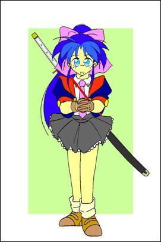
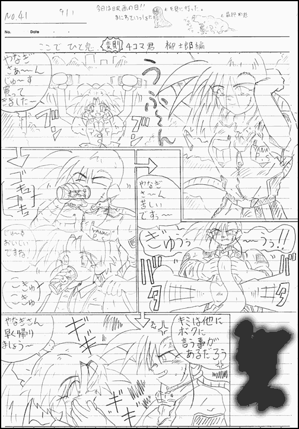
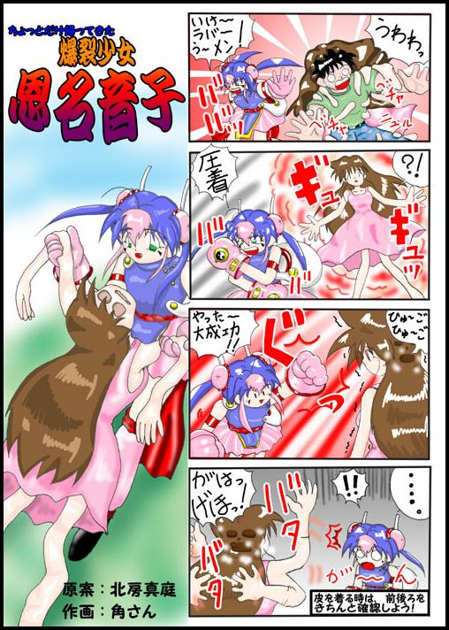

＜はじめに＞
どうも、こんにちは！
このたびは、私共の書いたお話を見ようとページを開いてくれてありがとうございます。
このお話は、文庫の第二掲示板で書き込み投稿したものを編集し、投稿いたしました。
そして、以前文庫に投稿した“ＴＳストーリーランド 前編”の“続編”となります。
もし、このお話を読んでいない、知らないと言う方は、先に前編を読んでおくことをお勧めします。
また、後編を読んで、興味が出たら前編を読んでみるのもいいかもしれません。
それから、このお話はかなり膨大な量になってしまったので、少し内容の説明をさせていただこうと思います。
＜おしながき＞
第零話 以前、感想掲示板に書き込み投稿した、幻のお話です。
第１０．５話 今回特別に書き下ろしたお話です。
第十一話〜第二十一話 ＭＯＮＤＯさんの、かわいい鈴の挿絵とオマケ数点を含めた“後編”完全版です。
オマケ サービス過剰と言われながらも今回もやっています。
リサイクル作品二点 短いお話と、白黒の４コママンガを掲載しています。
白黒４コマは、鉛筆ノート書きで、サイズは５００×７２０で容量は６９．２ＫＢです。
書き下ろし４コマ 今回特別に書き下ろした4コマです。
カラー４コマは、サイズ５００×７０４で容量は１４１ＫＢです。
以上が、今回収録されているものです。
それから、通信料、電話代がもったいない方は、画像のダウンロードが始まったら回線を切断することをお勧めします。
それから、このお話を編集、投稿するに当たり、多くの方々にお力をいただきました。
ＭＯＮＤＯさん 猫野さん ＢＡＦさん よしおかさん
本当にありがとうございました。
この場を借りて、お礼を言わせていただきます。
それでは長くなりましたが、ＴＳストーリーランド 後編をお楽しみください。
私共は、このお話を見て、皆さんが少しでも楽しんでいただけたら幸いと思っています。
第零話
意識が朦朧とする中、俺は胸に痛烈な痛みを感じる。
そうだ、俺はもうすぐ死ぬんだ・・・・・
地面に這いつくばり抱き合うように倒れているあいつの顔、それは目に一杯の涙を浮かべ俺を見ている。
体中の血が胸に集中し、心臓は不規則な鼓動をたてる。
暑く寒い、それは低温火傷したように胸の芯がジンジンと痛み、そして両手両足の末端の部分は凍えるように冷たかった。
体中の血の気が引いていくのが解る。それと共に俺の思考が鈍っていく。
もう何も考えられない・・・・・・
今日の事、昨日の事、今までの事、それらが全て現実でなかったように頭の中から消えていく。
曇る瞳の中で、鏡を見るように俺の顔が見える。
その俺の顔は目に涙を溜め、唇を震わせながら何かを言っている。
しかし、俺の聴覚、いや五感のほとんどはなくなり何を言っているのか聞き取れない。
俺と抱き合っている俺は震える手で俺の頬を撫でる。
その手にはべっとりと血が付いていて、俺の頬にその熱くねっとりとした感触を残す。
それと同時にその俺は、力無く手を地面に投げ出しゆっくりと目を閉じていく。
何とも言えない感情が俺の中にわき上がり、俺の目からボロボロと涙がこぼれ落ちる。
死ぬな、死ぬな、何で、どうしてこうなったんだ・・・・
ただ、俺達は普通に生きていたいだけなんだ・・・・
ただ、俺達は一緒にいたいだけなんだ・・・・・
そんな簡単な事にやっと気づく事ができたのに・・・・・
今はもう遅い・・・・
意識が遠のく・・・・
死にたくない・・・・・
死にたくない・・・・・
もう、お終いなのか・・・・・・・・
最後に・・・・
最後に・・・・・
もう一度、あいつの笑顔が見たかった・・・・・・・・
第零話 ＜序の章：交心＞
何か夢のようなものを見ていた気がする。
真っ白、いや真っ黒、どちらでもない、ただ色の無い世界にいる夢だ・・・・
そこは、何も見えない、何も聞こえない、何も臭わない、そして何も感じない、不思議な世界だったような気がする。
そこから、水面に浮かび上がるような浮遊感を覚え、目を覚ます。
頭はまだはっきりとせず、まぶたも重く開くことができない。
ただ、感じるのは布団の中の暖かい感覚だけだ。
その暖かさが再び俺を夢の世界に誘おうとしている。
『もう一度、寝よう・・・・』
そう思い、うつ伏せになり布団を更に深くかぶる。
しばらくうつらうつらしていたが、なんだか寝苦しい。
と、いうか、息苦しい。
なんだか両肺が押さえつけられている様でどうも落ち着かない。
仕方がないので、眠気で重くなっている体を横向きにして寝返りをうってみる。
その時、俺が今まで味わった事の無い感覚が俺を襲う。
不思議に思い、もう一度寝返りをうってみる。
またしても、その奇妙な感覚が俺を襲う・・・
何か、胸の辺りに大きな二つの”コブ”の様なものがあり、そのコブが寝返りをうつたびに揺れるのだ。
そして横になっているとそのコブは重力に引かれその重みを下に移す。
そのコブは水風船のように重く柔らかい、今も俺の腕の付け根にその重みと柔らかさを伝えている。
そしてその間に気づいたのだが、普通ならぴったり合うはずのない太ももが今はぴったりと合わさっている・・・・
眠気の襲うぼんやりとした頭がだんだんと覚醒し、体の感覚もよみがえってくる。
恐る恐る胸にある二つのコブに手を沿わしてみる。
”ムニュリ”とした感覚が掌に伝わると同時にその触ったコブにも指で圧迫する感覚が伝わる。
明らかにそれは俺の体の一部であり、それは今まで俺の体にはなかったものだ・・・・
俺はまだ覚めきってない体を起こし自分の体を確かめる・・・
飛び起きて目に入るのは見知らぬ部屋。
まだ明け切ってない朝日がピンク色のカーテンを透かし部屋を薄ピンク色に染め上げている。
見知らぬ机、見知らぬ雑誌、見知らぬぬいぐるみ、どれも見知らぬものばかりだ。
そして俺は、ピンクの花柄の上掛け布団をゆっくりはぎ取ると自分の体を確かめるために見下ろす。
その俺の目に飛び込んできたのは、着た覚えのない見知らぬピンク色のパジャマ・・・・
そしてその俺の胸は、まるで何か詰め物をされたように丸く膨らみ、俺が息をするたびにそれは上下に揺れている。
”なんだ？” 目に映るそこにあって、あるはずでないもの・・・
”何でこんなものがあるんだ？” 現実に存在するべきものでないもの・・・・
それを、腫れ物を触るように恐る恐るもう一度触ってみる。
やっぱりそれは俺の体から盛り上がっている。指先に触れる敏感な突起、それが更にこの絶望的な状況を再び現実のものにする。
”何で、どうして・・・・” そんな事だけが頭の中でグルグルと回る・・・・
うなだれながら、部屋の隅に置いてある姿見に目を移す。
そこに映る少女の姿・・・・・
ピンクのゆったりとしたパジャマに身を包んでいるにもかかわらず、胸は自分が女だと言う事を主張するように、そのパジャマをツンと押し上げている。その非現実的な現実をまの当たりにし、呆然としながら視線をゆっくり上げていく。
そこに映った自分の顔は寝起きでボサボサの寝癖をつくった少女の顔・・・・
そしてその顔は、混乱した頭に更に衝撃を送る。
それは、自分の良く知った顔・・・・・
”知花・・・・・”
何で、俺が知花に・・・・・・
鏡を見ながら顔を触ってみる。
すると、その鏡に映る知花も俺と同じ行動をとる。
鏡に映った知花の顔は、不安に満ちた表情で俺を見つめている・・・・
あいつとは、しばらく口もきいてなかった。
最近、あいつとこれといった接点の無いのに、何で俺はあいつになってしまったのだ・・・・・
原因が分からない・・・・・
ただの幼なじみ・・・・・
それだけだ・・・・・
それなのに俺は知花になってしまった・・・・・
何で、どうして、もう、何も考えられない・・・・・
こんな非現実的な事があっていいはずがない。
夢なら早く覚めて欲しい。
しかし、この夢は絶対覚める事の無い現実なのだ・・・・
俺は、この先どうすればいいのか解らず、ベッドに頭を抱えながら座り込む・・・・・
女の細く柔らかいサラサラとした髪の毛が指の間に滑り込み、肌をくすぐる。
そして、息をするたびにその柔らかい胸は上下に揺れ、肩や背中の肉を引っ張りながらその重みを伝えてくる。
今までぴったりと閉じる事の無かった両足は、足の付け根からぴったりと閉じる事ができた。
「ああ、俺は何で、知花になったんだ・・・・」
そう呟く声も、今まで聞き慣れた低い自分の声では無く、高いソプラノがかった女の知花の声だった・・・・
そのまましばらくうなだれていると、日がだんだんと昇り始め薄暗かった部屋も明るくなっていく。
知花の部屋は、ピンク色のカーテンを透して更にピンク色に染まっていく。
そこは、今まで知花が生活をした形跡の残る部屋だった・・・・
学習机の上に広がる教科書やノート、カワイイ女の子が好みそうなステーショナリーグッツ・・・・・・・
ベッドの周りを囲むようにおかれたぬいぐるみ・・・・
床に重ねられるように置かれた、ファッション雑誌や少女漫画・・・・
部屋の中央に置いてある小さなテーブルには、カワイイ髪飾りや、ヘヤースプレー、櫛、ドライヤーなどの身だしなみを整える小道具の数々・・・・
壁を囲むように置かれた洋服ダンスや棚は、本やぬいぐるみが綺麗に整頓され置かれている・・・・・
そして、壁に取り付けられている洋服掛けには、うちの学校の制服、もちろん女物の制服が掛けられている・・・・
知花の姿、知花の部屋、知花の生活・・・・・
突然そこに放り込まれた俺はどうすればいいんだ・・・・・
その時、部屋のテーブルの上に置いてある電話の子機が鳴り出す。
こんな朝早くから一体誰なんだ・・・・・
そこで始めて気づく知花の存在・・・・
今まで自分の置かれた状況で手一杯で、この体の本当の持ち主の知花の事まで考える事ができなかった。
もし俺の考えが正しかったらこの電話の主は・・・・・
『もしもし・・・・・』
電話に出た男の声は、相手を探るようにおどおどした声で俺に話しかけてくる。
その声は、聞き覚えのある男の声・・・・
そう、俺の声だ・・・・・
「もしもし、もしかしてお前、知花か？」
『えっ、そう言うあなたは・・・・』
『もしかして、優君・・・・・・』
案の定、帰ってくる言葉は俺の予想したものだった・・・・
陳腐なセリフだが、俺達はこの日、朝目が覚めると心と体が入れ替わっていた・・・・
この不思議で、非現実的な現状に戸惑う俺達・・・・・
しかし、これがただのきっかけに過ぎない事を俺はまだ知る由もなかった・・・・
ＴＳストーリーランド（後編）
原案：北房真庭 作：角さん 挿絵：ＭＯＮＤＯさん
第１０．５話 ＜柳四郎の章：紅（あか）＞
日が傾き、町並みを真っ赤に染め上げている。
灰色がかったコンクリートのビルも、公園の緑も、黒ずんだアスファルトも、真っ赤に染まっている。
僕はそれを、ビルの上からジッと見ていた・・・・・
燃える町並み・・・・
そんなことを思いながら、赤く染まっている町並みをぐるりと見回す。
その中で、ひときわ赤く染まっている場所を見つける。
そこは、夕日を浴びて赤く染まっていると言うより、そこ自体が赤く発光しているといった感じだった・・・・
真っ赤に燃え上がる山・・・・
僕は、『そこに行ったら・・・・』と言う期待を胸に、その山に行ってみる事にする。
夕日に染まった木々のトンネルを抜けて、その山の頂にある小さな社にたどり着く。
山の頂の開けたところにある社は、本当に燃えるように真っ赤だった・・・・
夕日を浴びて無秩序に伸びた雑草が、風に煽られざわざわとなびいて、まるでこの社が燃え上がっているように見えた。
そして、その社と対面して立つ男・・・・・
その男は、ぼさぼさの長い髪を後ろで縛り、背中に“柳 パーフェクトサービス”と書かれた真っ赤似染まった繋ぎの作業着を着て、右手に持った真っ赤な光を放つ抜き身の日本刀を肩に置き、不動立ちで社と向き合っている。
僕は、その様子をじっと見ていた。
社以外何もない空間と対峙する男の雰囲気は、まるでその何もない空間と戦っているような、そんな張り詰めた空気を放っていた。
男から放たれる冷たい空気と、男に集まる重い空気・・・・・
意識の集中と、開放・・・・・
それは、周りを巻き込み、後ろからそれを見ている僕にもびりびりと伝わってきた。
そう、これは僕が今まで感じたことのない人が放つ気配・・・・・
熱く、冷たい気配・・・・・殺気
そう、この男は何もない空間に、とてつもない殺気を放っていた。
そして、肩にかけていた赤く輝く日本刀を勢いよく、その何もない空間に振り下ろす。
その瞬間、刀が風を捲き、パン！と何もない空間が弾け、その何もない空間に空気が吸い込まれたような錯覚におちる。
まるでこの男は、何もない空間を切り裂いたような気がした。
そして男は、何もなかったように右手首を返し、腰のベルトに差してある鞘を抜き、その赤く輝く日本刀を収める。
そのまま、ゆっくりと社の前に進み、その階段に腰を下ろす。
とても怖かったが、僕はその男の前に立ってみた。
しかし、男はまるで前にいる僕を無視するかのように、目の前に広がる町並みを見下ろしていた。
まるで、地獄の門番のように社を背に座る男・・・・
夕日を受け、真っ赤の燃えたようになびく長い髪・・・・・
夕日をものともしない、強く鋭い、眼光・・・・・
数え切れないほどの戦いを生き残ってきた証と思われる、左頬についた大きな傷・・・・・
そして、鞘に収められてもなお、その鋭い殺気を放つ日本刀・・・・
僕が思い描いた、殺人鬼や殺し屋というイメージを髣髴とさせる雰囲気をかもし出していた。
しかし、その男は、目の前に立っている僕に気づいてない。
男の瞳は僕の体を通り越し眼下に広がる町並みを、まるで肉食獣が獲物を探すように、じっと見つめていた。
「やっぱり・・・・・」
予想はしていたが、その予想があったっていたことに、僕はうなだれる・・・・
この男ならと思っていたが、それも無理みたいだ。
すると男は、無造作にポケットからタバコを取り出し、火を点ける。
夕日を浴びて赤く染まった紫煙が、僕の前でゆらゆらと漂っている。
それを僕はじっと見ていた。
どうせ、誰も気づかない、誰も僕の存在を感じない、だったらこの奇怪な男をしばらく見てみようと思った。
だが・・・・
「おい！」
不意に、男は口を開いた。
今まで無視されていたと、気を抜いていた僕は、その言葉にびっくりしてしまう。
「兄ちゃん、そこにいたら煙てぇだろう？」
更に話しかけられた僕は、どうしていいか戸惑ってしまう。
しばらく呆然と男を眺める僕・・・・・
それに業を煮やしたのか、男は再び話しかけてくる。
「用がねぇなら、どっか行ってくれ！邪魔だ・・・・」
そういわれて僕はここに来た理由を思い出した。
僕は、男に向かってゆっくりと口を開く・・・・・・
「僕を、殺してくれませんか・・・・・・・」
そうだ、誰からも相手にされず、このまま一人さびしく生きていくなら、死んだほうがいい。
死は永遠の孤独、しかしそれは周りの世界が見えないだけいい。
『僕はここにいる！』
『誰か僕に気づいてよ！』
そう叫ぼうが、誰も気づいてくれない、そんな孤独はもう、こりごりだ・・・・・
だから、この孤独をこの男に終わらせてもらいたかった。
その、体中から放たれる殺気と、真っ赤に燃える血の色をした日本刀によって・・・・
じっと男を凝視する僕に向かって、男はタバコの煙を吐き捨てると、口を開く。
「いいぜ！殺してやっても・・・」
男は、顔色一つ変えず、あっさりとそう言ってのけた。
あまりにあっさり平然と言ったので、僕は驚いてしまった。
この男は、そういうことを日常としてやっている人間なんだ、僕はその男の鋭い眼光から、そう悟ってしまった。
「しかし、兄ちゃん、俺も“柳 パーフェクトサービス”って言う、草むしりから、人殺しまで何でもやる便利屋の看板掲げてんだ」
「見たところ、学生みたいだが・・・・・兄ちゃん、金持ってんのか？」
「言っとくが、俺への依頼料は、たけぇぞ！」
男は、鋭い眼光で僕を見つめながら、そう言った。
「金は払えないです・・・・・でも」
僕は、じっと男を見据えた。
金は払えないけど、僕の意思は変わらなかった。
このままじゃ、駄目だ、僕はこの男に殺してもらいたかった。
男は、黙って僕を見ている。
僕は、それに視線で答えるしかできなかった・・・・・
そして、男はタバコを一本吸い終えたあと、その重い口を開いた。
「兄ちゃん、ここら辺の人間だろう？」
「この近くにコンビにねぇか？」
「わりぃけど、案内してくれ」
「え？」
突然の男の申し出・・・・・僕はそれに戸惑ってしまう。
何が何だかわからず、呆然としている僕を置いて男は立ち上がりスタスタ先に行ってしまう。
「おい、早く案内してくれ、俺の機嫌が良くなれば、兄ちゃん殺してやれるかもしれないぜ！」
男は、振り向き、僕にそう言うとケタケタ笑った。
僕は、この男について行くしかなかった。
この男が、僕を殺してくれるなら、僕はどこへでもついて行く。
その時はもう、男はあの強烈な殺気は放っていなかった・・・・・・
社のある山を下り、しばらく行った所にコンビニがある。
僕は男をそこに案内した。
男は、僕を置きスタスタと中に入って行った。
そして、しばらくすると男は大きなビニール袋を下げてコンビニから出てきた。
「お！兄ちゃん、まだいたのか？」
僕がどこへも行けない事を知っていて、男は意地悪くそう言った。
何か言い返してやりたいが、僕はそんなことを言える立場じゃない。
そうすると男は、今買ってきたコンビニの袋に手を入れゴソゴソと何かを取り出した。
「ほれ、お前の分だ！」
そう言って男は、僕の目の前にアイスを差し出した。
「何で・・・・・僕に？」
僕は、この男の行動がまったくわからなくなってしまった。
とてつもない殺気を放ったと思ったら、こんな僕に軽口を叩き、ニコニコとする男・・・・・
まったく、何がしたいのかわからない。
「ほれ！せっかく買ってきてやったアイスが溶けるぞ！」
「これは、道案内をしてくれた兄ちゃんへの御礼だ！」
「世の中、ギブ アンド テイク 正当報酬だ！」
「アイス溶けるから、早う（はよう）受け取れ！！」
そう言って、男は無理矢理、僕の掌にアイスを置いた。
「つめたい・・・・・・」
「あ？アイスが冷たいのは当たり前だ！やれ食え！はよ食え！どんどん食え！！」
「せっかく俺が無い金払って、買うてやったんだから、ありがたく食えよ！」
僕は、男に言われるまま、棒アイスにかじりついた。
男は、僕の隣でタバコをふかしながら、僕を見下ろす。
「うまいか？」
その男の一言が、何だかとても優しく、そして暖かく感じた。
僕は、何だか急に恥ずかしくなり何も言えず、うなずく事しかできなかった。
「そうか・・・」
「たった、１００円！でもそれがうまいんだと思える、幸せじゃね〜か」
「どっかの馬鹿なんか、白飯で涙流しながら喜ぶんだぜ〜」
「世の中って、面白いじゃないか？」
そういって男は、吸いかけのタバコを手で握りつぶす。
「それが、感じられなくなったら、死んでいるのと同じだ・・・・・」
男の言ったその言葉は、何だか僕に言っているというより、自分自身に言っているような口調だった。
アイスを、半分ぐらい食べ終わったとき、男は僕の持つアイスの棒をじっと見る。
「おい！兄ちゃん、それ当たってるんじゃねぇか？」
「え？」
僕は、手に持つアイスの棒を見てみた。
木でできたアイスの棒に、“アタリ”と焼印が押してある。
「ほんとだ、当たってる・・・・・」
「兄ちゃん、ついてるな！」
「これで、もう一本アイスが食える。」
「嬉しいねぇ〜」
男は、アイスの棒を見ながら、ニコニコと笑っている。
「これも、俺が店員に睨まれながら、アイスを選んだおかげだぜ」
「ありがたいと思え！」
そして、男はまたポケットからタバコを取り出し、火をつける。
アイス一本、アタリが出たからって、こんなに偉そうにしなくてもいいのに・・・・・
そう思っていると、男はタバコを吐きながら口を開く。
「兄ちゃん、これで死ねなくなったな」
「え？」
男の不思議な言葉に、僕は息を飲んでしまう。
「何で、死ねなくなったんですか？」
その言葉を聞き、男は意地悪そうな顔をして笑う。
「兄ちゃん、そのアイス、アタリだろ？」
「だったら、アイス引き換えてもらわにゃならんだろ！」
「え、ええ・・・・」
僕は何が何だか分からず、男の言葉にうなずく事しかできなかった。
「兄ちゃんは、そのアタリのアイスの棒を、明日ルンルン気分で引き換えに来る！」
「そして、また、そのおいしいアイスをここで食わなきゃならない」
そして男は、僕の頭にぽんっと手を置く。
「え、なんで？」
僕は、びっくりして、その場から飛びのいた。
しかし、男はそれを意に介さず、マイペースに話を続ける。
「兄ちゃんは、アイスのために、もう一日生きなきゃならない」
「今、兄ちゃんに生きる目的ができた」
「これじゃあ、もう死ねねぇなぁ」
男の言葉の僕は動揺した。
「そんな、そんな理由で・・・・・・」
そうだ、僕はこの男に殺してもらいたくてついてきた。
でも、こんな小さな理由で、殺される事を反故にされることは、嫌だった。
僕は、どんな気持ちで、この事を待っていたかこの男はわかっていない。
そして、僕がどんな決意で、殺してもらおうと思っているかわかっていない。
誰も、見向きもしない、誰も触れてくれない、だけど周りはいつも通りに動いていく。
何度叫んだだろう、何度泣いただろう、だけどみんなは僕を無視し続けた・・・・・
「僕は、そんな、事のために生きていたくない！！」
大声でそう言い放った僕を、男はじっと睨む。
それは、社の前で見た男の目と同じだった。
獲物を追い詰める、圧倒的な威圧、身じろぎできないほどの殺気・・・・・
「そうか・・・・」
男は、くわえたままのタバコを、吐き出し一息つく。
「兄ちゃん・・・・」
「どんな小さな事でも、生きる目的になるんじゃねぇか？」
男は、そう言って、目を細くして笑う。
「たとえ、それが、当たったアイスの引き換えだけだったとしても・・・・」
「うめぇ〜ぞ！アイス」
そう言って、男は、ケタケタ笑う。
「兄ちゃん・・・・」
男は、そう言って、僕の頭に再び手を置く。
「死ぬ理由も色々あるが、生きる理由も色々あるもんだ」
「とりあえず、兄ちゃんの生きる目的は、そのアイスの当たり棒を引き換えることだ！」
「いいな！」
男は、ニッコリと笑う。
夕日をいっぱいに浴びながら、今まで見せたことの無いあったかい笑顔で、男は笑った。
その笑顔を見て、何だかこの男を信じてみようと思った。
でも、そのとき僕は、恥ずかしくなり男に何も言えなかった。
ただ、手を置かれた頭をコクコクと振ることだけしかできなかった。
「べ、別に兄ちゃんに生きてほしいってわけじゃねぇぞ！」
「ただ、兄ちゃんを殺して恨まれたら、怖いからな！」
「他に、理由なんてねぇからな！！」
そういって男は、照れたようにそっぽを向き歩き出す。
「あ・・・・」
呼び止めようとした僕に、男は振り返らずに手を振る。
それを僕は、何も言わずに見送った。
真っ赤に燃える夕日を浴び、真っ赤に染まった男は、夕日の中に消えていく。
氷の様な殺気を放ち、炎の様な暖かさを持つ男は、僕にアイスの当たり棒という生きる目的を与え、消えていった。
名前も言わず、ただ殺してくれと言う僕の話を聞き、僕に触れてくれた男・・・・
僕は、それをずっと見送った。
気がつくと僕は、ベッドの中にいた。
真っ白な天井、真っ白な壁、真っ白な部屋・・・・・
ここは？
僕ははっきりしない頭で、周りを見回す。
そこへ、入り口から入ってきた白い服を着た女性が、僕の顔を見て驚く。
・・・・・看護婦さん？
入り口の前で固まっていた看護婦さんは、大声を上げながらバタバタと走り去っていく。
そして、僕がいる部屋は人であふれかえる。
涙ながらに、僕に抱きつく母親・・・・・
部屋の端で腕を組み、うっすら涙を流し、笑う父親・・・・・
それを見ながら、微笑むお医者さんと看護婦さん・・・・
そうだ、僕は学校でいじめにあって、校舎の屋上から飛び降りたのだ。
そして僕は、運良く木の上に落ち、そしてその木の枝がクッションになり命は助かったと、看護婦さんが教えてくれた。
しかし、命は助かったがしばらく意識不明で僕はこの病院に入院してたそうだ。
みんな、僕の意識が戻ったことを喜んでくれた。
みんな、僕に笑いかけてくれた。
みんな、僕に話しかけてくれた。
それが嬉しかった。
そして、意識が戻った日に僕が持っていた、アイスの当たり棒・・・
看護婦さんに聞いても、僕がどこからアイスの棒を持ち込んだのかわからないと言っていた。
でも、僕は覚えている。
あの日、僕が会った、あの男の人の事を・・・・
夕日を浴びて、真っ赤に染まった男の事を・・・・
血に飢えた獣のような殺気を放ったと思ったら、意地悪い笑顔とともに軽口を叩く不思議な男・・・・・
血に染まったように赤い男・・・・
しかし、その男は僕に生きる目的をくれた。
小さな目的だけど・・・・
だけど僕は、それで生きていくことができる。
そして、僕は男から更に大きな生きる目的を貰った。
そう、もう一度、彼に会うという・・・・
そして、もう一度聞こう。
「私を、殺してくれませんか？」
そのとき彼はどう答えるだろう・・・・・
そして、どんな生きる目的をくれるのだろう・・・・・
だから、私はもう少し生きることにする。
真っ赤な、夕日を浴び、紅に染まった男に会うために・・・・
＜お詫び＞
今回の第10.5話は、処々の事情により、予定していた内容を大幅に変更、削除いたしました。
その事を、深くお詫びいたします。
第十一話 ＜佐々木盛綱の章：駅裏、公園前＞
ウチの会社”柳・パーフェクトサービス”は、駅前通りにある。
駅から歩いて５分、立地条件は最高である。
だが、客はあまり来ない・・・・
まぁ、士郎さんが作ったいい加減なキャッチコピーに問題があるのだが・・・
その為、この会社でたった一人の事務員の僕は赤字解消のため、特技のパソコンを使いプログラムの打ち込みなどのアルバイトをして、何とか会社を潰さないように頑張っている。
そんな僕が、唯一落ち着ける場所が、この駅裏のバスターミナルの上にある歩道橋である。
歩道橋と言っても結構広いもので、ベンチやトイレ、ちょっとしたステージなどもある。
そしてドーナッツ状になっている歩道橋の中央には大きな時計塔が建っている。
何でもこの先に出来た、公園のシンボルとして建てられたものだそうだ。
駅の構内にある自動販売機で買った、カップコーヒーをチビチビ飲みながら、腕時計を見る。ＰＭ７時５８分、そろそろだな・・・
僕は、手すりに両肘を置き、しばらく時計塔を眺める。
すると、時計塔の針が８時ちょうどを指す。
周りに設置されたスピーカーから幻想的な音楽が流れ出し、ライトアップされた時計塔の文字盤から上の部分が、まるでペンのキャップを抜くようにゆっくりせり上がっていく。
そして、文字盤があった場所からアンデルセンのお話をモチーフにしたカラクリ人形が出てきて動き出す。
この大きなカラクリ人形を、ボーッと見るのも僕の楽しみの一つになっている。
そう言えば、この前、鈴ちゃんと一緒にここに来た時、彼女は目を丸くして驚き、時計塔の周りをクルクルと回ってカラクリ人形の動きを追っていた。
その事を思い出すと、どうしても口元がほころんでしまう。
僕のような醒めた人間にとって、彼女の明るさが唯一の活力剤になっているのかもしれない・・・
「よう！盛綱、こんな所で何をニタニタしてるんだ？」
僕は、背後からかけられたしわがれた声に反応し、後ろに振り返る。
そこには、よれた茶色のスーツを着た４０代前後の男が立っていた。
この男は、僕達、特に士郎さんの事をかぎ回っている刑事の岩間さんだ。
「おや、刑事さん、今日はなんのご用で・・・」
「フン！いつもながら味気ない奴だ、率直に聞こう、柳士郎はどこに行った」
岩間の口調は普通なのだが、その鋭い眼光はまるで僕を威圧している様だ。
しかし、このやりとりは毎度の事なので、彼の眼力も今の僕にはあまり意味をなさない。
「社長？ウチの社長は放浪癖があるので、どこに行っているかはちょっと・・・・」
「それに、そんな事をあなたに教える義務は無いでしょう」
「まさか、職務質問なんて事じゃ無いでしょう？」
岩間は、僕の答えが気に障ったのか、更に鋭い眼光で僕を睨みつける。
「ふざけるな！銃刀法違反、警官隊機動隊員２００人との乱闘事件、鉄塔横倒し事件、その他諸々の事件に関わっている危険人物を、野放しにしていいと思っているのか？」
「そして、あいつが行く先々で、人が死ぬ・・・・」
岩間は、興奮気味に声を荒げているが、僕はそれに冷静に対処する。
「岩間さん、こんな話を聞いたことはないですか？」
「”柳士郎には手を出すな”と・・・・」
「上からの命令か、それも納得がいかん！警官機動隊員２００人相手に乱闘事件の後、上からの命令がこれだ、上は何を考えている・・・」
「そう言えば、あなたはその現場にいたそうですね」
「そうだ、俺はあの現場にいた・・・」
「今、思い出しただけでも寒気がする」
「あいつは・・・あいつは、”素手”で、２００人もの武装した人間を、”無傷”で倒してしまった・・・」
「その奴の様は、まるで血に飢えた肉食獣の様だった、一撃で一人の人間を確実に地べたに這いつくばらせていった・・・」
「そんな奴を、上は何で野放しにする！！」
「佐々木盛綱！真実を言え、あいつは一体、何者なんだ！！」
「あいつに一番近い人間の、お前なら知っているんだろう！！！」
真実・・・・
何を差して真実と言うのか、僕には解らない。
士郎さんの事、ウチの会社の事、北条家の事、僕はその全てを知ってしまった。
世の中、知らない方がいいと言う事が多々あるが、どうやら僕はそれを知ってしまったようだ。
５年前、士郎さんに始めて出会った時から、僕の人生は大きく変わってしまった。
その為、僕はこのメガネ越しからしか、世界を見られなくなってしまった・・・・
この刑事にそれを話してしまえば、もう、普通の生活は出来なくなってしまうだろう・・・・
真実は常に、身近にあるものだ。
そして、それはまるで”コロンブスの卵”の様に気づいてしまえば、なんて事はないことだ。
しかし、それに気づけば、底なし沼に落ちたように、そこからはい上がれなくなってしまう。
そう、血で染まった、真っ赤な底なし沼に・・・・・・
岩間は、考え込む僕に業を煮やしたのか口を開く。
「黙秘か？いいだろう、確かあいつは小さな女の子を連れ歩いているそうだな」
「北条鈴とか言う、３年前にひょっこり現れた、あの女の子だ・・・」
「なんなら、その女の子を、警察で保護して話を聞いてもいいんだぜ？」
『！！！』
岩間は、触れてはならないものに触れようとしている・・・・
僕は、珍しく頭に血が上るのを押さえながら、彼に言う。
「彼女に手を出すな、彼女に手を出すなら、ウチはもちろん、あなたが一番恐れている柳士郎が、あなたを全力で消しに行くだろう・・・」
興奮する自分を押さえ、冷静に話そうとするが、僕の口調は自然に強くなってしまう。
彼女は、僕達には必要な人だ。
日々、どんどん人の心を失いつつある僕に、感情豊かな彼女は、失った僕の心を取り戻してくれる唯一の人だ。
「消す？俺を殺すというのか？俺を殺せば、俺の仲間が黙っていないぞ・・・」
岩間の口調や態度は変わりないが、その鋭い目の奥には明らかに恐怖を感じることが出来る。
彼はあの修羅場を見て、士郎さんの本当の怖さを知ってしまったのだ。
だから彼は直接、士郎さんに手を出さず、その周りの人間の僕に手を出してきたのだろう・・・
しかし、人を介して得た真実は、真実とは言えない。
真実とは常にその人間の二つの目で見、そしてそれを信じた時に始めて生まれ出るものだから・・・
僕は、５年前それを実体験してしまったから言える事だが・・・
「殺す？そんな事は、しませんよ・・・」
そう、殺しはしないだろう、士郎さんやあの人が本気で怒ったら、それだけでは済まないだろう・・・
そう、言葉通り、消されてしまう事だろう・・・・
「・・・・・」
岩間も僕の言っている事が理解できたのだろう、何も言わなくなってしまった。
彼も、もう、底なし沼に片足を突っ込んでしまっているのだろうか・・・
僕は、残ったコーヒーを一気に飲み干すと、カップを握りつぶし、近くのゴミ箱に投げ入れる。
周りには、駅から行き来する若者達で溢れかえっている。
ここは、彼らにとっていいたまり場になっている。
あちこちで、路上ライブをやっている人もいる。
その中で、ギターを抱えた少年が、うずくまっているのに気づく。
「どうした？」
怪訝な顔をして岩間は、僕の目線を追う。
歩道橋の角で、うずくまっている少年を気にも留めないで、人々は足早に通りすぎて行く。
まるで、そこには何もいないかの様に・・・・
少年は、タイル貼りの地面の一点を見つめ、ブツブツと独り言を言い、体は小刻みに震えている。
僕は、岩間を置いて、その少年に近づくと肩に右手を乗せる。
ブツブツと独り言を言っている少年は、ゆっくりと顔を上げ、虚ろな目で僕の顔を見返す。
「僕に、あなたの歌を聴かせてもらえませんか？」
少年は、僕の言葉を聞き、その体の震えを更に激しくさせ、言葉にならない言葉を発し出す。
「人に与えられた力なんて、本当の力じゃないですよ・・・」
「努力して得た力こそが、始めて自分の力になるんです・・・」
「たとえそれが、無駄な事だったとしても、それは必ずあなたの役に立つ・・・・」
少年の肩に乗せた右手にパチリと刺激が走る。
そして、虚ろだった少年の目に生気が宿っていく。
「僕に、あなたの歌を聴かせてもらえますね」
少年はうつむきながらコクンとうなずくと、両手に抱えたギターを奏でだす。
足早に通りすぎて行く人々が、少しずつ少年の前で足を止めていく。
その様子を岩間は、呆然と見ている。
彼には僕の行動が理解できてないようだ。
「盛綱、お前はあの少年に何を言ったんだ？」
彼は、気づかなかったのだ・・・・
僕が、彼に見せることが出来る、唯一の真実を・・・・
それは、常に身近にある・・・
ただそれに、気づかないだけ・・・・
「刑事さん・・・・」
「あなたは、言霊を信じますか？」
僕は、岩間にそう言いその場を離れる。
僕が、彼に与えられる情報は与えた。
後は、彼がそれに気づき、信じるかどうかだけだ・・・・
でも、世の中には、気づかない方が幸せだと言う事があると言う事だ。
第十二話 ＜式部知花の章：過去＞
１０年前：４月２１日
＜知花の母＞ 今日こちらに越して来た”式部”です。 これはつまらない物ですけど・・・
＜優介の母＞ あらあら、そんなに気を遣わなくてもいいのに・・・ あら、そちらにいるお嬢ちゃんは？
＜知花の母＞ あっ、ほら知花、ちゃんとご挨拶しなさい！
＜知花＞ ・・・・こんにちは・・・・・
＜知花の母＞ すいません、この子、人見知りが激しくて・・・・
＜優介の母＞ まだ、こっちに引っ越して来たばかりだから心細いのよね〜 あっ、そうだ！ ゆう君！ ゆう君！！
＜優介＞ なに？ おかあさん・・・・
＜優介の母＞ 今日、引っ越して来た知花ちゃん！ まだ、こっちに越して来たばかりだから、優君、お友達になってあげなさい。
＜優介＞ うん！ ぼく、ゆうすけ！！ よろしくね！
＜知花＞ わっわたし、ちか・・・・・・
１０年前：６月１３日
＜知花＞ ただいま！
＜知花の母＞ お帰りなさい、今日もゆう君の所に行ってたの？
＜知花＞ うん！ わたし、おおきくなったら、ゆうくんのおよめさんになるんだ！！
＜知花の母＞ そう、だったら、ゆう君に嫌われないようにいい子にしてなくちゃね！！
＜知花＞ うん！！ わたし、ゆうくんにきらわれないようにいいこになる！！
８年前：１０月４日
＜知花＞ え〜〜ん え〜〜〜ん
＜近所の人々＞ 可哀想にね、まだ働き盛りって言うのに・・・・
＜知花＞ え〜〜〜ん え〜〜〜ん
＜近所の人々＞ まだ、お子さん小さいって言うのに・・・ 奥さん、大丈夫かしら・・・・
＜知花＞ えっく えっく パパァ〜〜〜
＜優介＞ ちかちゃん・・・・
＜知花＞ ゆうくん・・・ パパが、パパが・・・・
８年前：１０月１９日
＜知花＞ ねぇー ゆうくん、どこ行くの？
＜優介＞ いいから、早くおいでよ！
＜知花＞ はーっ はー ゆうくんまってよ〜〜
＜優介＞ ほら、ここだよ！！
＜知花＞ わぁ〜〜 きれい！！ 町があんなに小さく見えるよ！ それに、空があんなにたかい・・・・
＜優介＞ あはは、ちかちゃんやっとわらった！ ここは、ぼくのひみつのばしょなんだ！！
＜知花＞ ゆうくん・・・・・
＜優介＞ ちかちゃんがないてばがりいると、てんごくのおとうさんもかなしいとおもうよ！
＜知花＞ うん！ ゆうくん、ありがとう・・・・ わたし、もうなかない・・・・
＜優介＞ うん！！
７年前：４月８日
＜近所の子供＞ わ〜〜い！！ 男の中に女が一人！！
＜知花＞ ・・・・
＜近所の子供＞ 女のお前なんか仲間に入れてやんないよ！！
＜優介＞ うるさい！！ ちかちゃんをいじめるな！！
＜近所の子供＞ わ〜〜 ゆうすけが、おこったぞ！！
＜優介＞ ちかちゃんをいじめるやつは、ぼくがゆるさないぞ！！
＜知花＞ ゆうくん、もういいよ！ ゆうくん・・・・
５年前：７月１０日
＜優介＞ 知花！！ 夏休み、家で海に行くんだけど、お前も来るか？
＜知花＞ えっ？ 私も行っていいの？ 迷惑じゃない？
＜優介＞ 何、言ってんだよ！ お前、しょっちゅう俺の家に来てんじゃないか！！
＜知花＞ でも、せっかくの家族旅行に私なんかがついて行っていいの？
＜優介＞ 今更、遠慮なんかするなよ！ お前はもう、ほとんど家の家族みたいなもんじゃないか！
＜知花＞ うん、ありがとう！！
４年前：２月１４日
＜知花＞ 優君、これ貰ってくれる？
＜優介＞ なんだこれ？
＜知花＞ バレンタインチョコレート！
＜クラスの男子＞ うわっ！ 源が式部にチョコレート貰っているぞ！！
＜優介＞ ！！
＜クラスの男子＞ えっ！ 本当か？ どこだ！ どこだ！！
＜優介＞ 知花、これ返すよ・・・・・
＜知花＞ 優君・・・・・
４年前：３月１日
＜知花＞ 優君、一緒に帰ろ！！
＜クラスの男子＞ 源〜 今日も彼女が迎えに来てるぜ！！
＜優介＞ ！！
＜クラスの男子＞ ヒュー ヒュー 御二人共、いつもいつも、熱いねぇ〜〜！！
＜優介＞ ・・・・
＜知花＞ ・・・・
＜クラスの男子＞ いや〜〜ん ボクちゃんも一緒に連れて帰って〜〜〜
＜優介＞ ・・・・・・
＜クラスの男子＞ お前等、愛し合ってるんだろう！ 俺達の前で、キスして見せろよ！！
＜優介＞ ・・・・・
＜クラスの男子＞ わはははははは・・・・・
＜知花＞ ・・・・・
＜クラスの男子＞ わはははははは・・・・・・
３年前：１１月１２日
＜知花＞ ねぇ 優君、知らない？
＜クラスの女子＞ えっ？ 源君なら、もう帰ったと思うけど・・・・
＜知花＞ そう・・・・ ありがとう・・・・・
３年前：１２月３日
＜優介＞ 式部！ 式部！！
＜知花＞ え？
＜優介＞ お前もう、俺の事迎えに来なくていいよ・・・・
＜知花＞ え！！
＜優介＞ それじゃあな！！
＜知花＞ 優君・・・・ なんで・・・・・・
２年前：９月２２日
＜優介＞ 今日も、暑いな〜〜〜
＜クラスの男子＞ 何、言ってんだ！ 夏は暑いに決まってるんだろ！！ 夏が寒かったら、冬って言うんだ！！
＜優介＞ 何、言ってんだか・・・・・
＜クラスの男子＞ おい、源！！ 式部が来てるぞ！！
＜優介＞ いいよ！ 今、忙しいんだ！！
＜クラスの男子＞ おい、本当にいいのか？
＜優介＞ いいよ、ほっとけば・・・・
＜知花＞ ・・・・・ゆうくん・・・・・・・
現在・・・・
優君、私、辛いよ・・・・・
寂しいよ・・・・・
私、これからどうすればいいの・・・・・
優君・・・・
ゆう君・・・・・・
第十三話 ＜北条鈴の章：帰路＞
パッパパパァーパ！あなたの幸せ守りますぅ〜〜〜♪
パッパパパァーパ！あなたの生活守りますぅ〜〜〜♪
なんでもやりますぅ〜♪ やられますぅ〜〜〜〜？
やぁ〜なぁ〜〜ぎぃ〜〜〜♪ ぱーふぇくとぉ〜〜〜〜♪
さぁ〜〜びすぅ〜〜〜♪ さぁ〜〜びすぅぅ〜〜〜〜♪
街路灯がぼんやり照らし出す住宅街の夜道を、鈴は”柳・パーフェクトサービス”の社歌を熱唱している。
余談ではあるが、この歌は事務所で暇をもてあました柳士郎が作った物で、この歌を”極楽浄土で釈迦歌う！２４時間耐久 社歌大会！！”で一日中、鈴に歌わせた経緯がある歌だ。
しかもこの大会は、単なる士郎の鈴イジメだった事は言うまでもない。
余談はさておき、鈴は声高らかに歌を歌いながら、優介とつないだ手をブンブン振り、嬉しそうに歩いている。
その嬉しさを表すかのように、彼女の長いポニーテールは、歩くたびに左右にフサフサ揺れている。
学校にも行かず、士郎と共に様々な土地を移動する鈴にとって、その地で出来る友達は本当に嬉しい物だろう・・・
しかし、その鈴の胸中を知らず、優介の足取りは重かった。
男達に引き延ばされたパンティーが歩くたびにずれてくるのだ。
それを手で押さえ元に戻すのだが、すぐにまたずれてくる。
仕方がないので優介は、スカートの上からパンティーを押さえ、内股でぎこちなく歩くしかなかった。
そして、鈴がそのつないでいる手を無意味にブンブンと振るので、ノーブラの優介の胸はそれにあわせてプルプルと揺れてどうにも落ち着かないでいる。
その優介の様子に気づかず、鈴は道も知らないのにずんずん先に進む。
それに耐えられなくなって優介は鈴を呼び止める。
「ちょっと、鈴ちゃん・・・・・」
「はえ？」
絶好調で歩き続けている所を、優介に呼び止められてキョトンと優介の顔を見る鈴。
「どうしたんですか？」
「えっ、いや、その・・・・・」
優介は、この無垢な瞳で自分の顔を見つめる少女に、今の状況を恥ずかしくって話すことが出来ないでいる。
そこで、何か別のことで彼女の気を引こうと考える。
「ねえ、鈴ちゃん、その背中の刀、本物なの？」
優介は、その言葉を発した直後、後悔した。
今まで気にはなっていたが、怖くてなかなか聞けないでいたものが、ぽろっと口から出てしまった事に・・・・
しかし、鈴は優介のその問いに、元気に答える。
「はい！本物で・・・・・・・あっ！！」
「あわわ！違います！！この刀は、まぐろをさばく為に使う包丁ですよ！！」
言っていることが、無茶苦茶である。
しかも、ウソというのがバレバレなウソである。
あの刀が包丁でも、背に背負うぐらい大きい包丁ならば、それを取り扱い持ち歩くにはそれなりの許可がいる。
その事に優介も気づき、顔を引きつらせながら鈴の顔をジッと見ている。
その鈴は、更に言葉を続ける。
「・・・・っと、柳さんが言えって、言ってました！」
更に、ダメ押しである。
この純粋な少女に、ウソをつけと言うのは無理な話である。
目を細めニコニコと笑う鈴を呆然と見つめる優介、この少女に関して謎が深まるばかりだ。
そこで優介は、鈴の話しによく出てくる”柳さん”について聞いてみることにする。
「ねえ、鈴ちゃん、その柳さんって誰なの？」
「柳さんは、とても意地悪な人です！！」
「この前、私に珍しく草団子くれたんです」
「それで、喜んで食べたら中に何入ってたと思います？」
「わさび！わさびですよ！！柳さん草団子の中にわさびを入れて私に食べさせたんですよ！！」
「ひどい人でしょう！！」
優介は、鈴と柳の関係を聞いたつもりなのだが、鈴はその柳士郎にやられたイタズラの数々を、優介に身振り手振りを付け一生懸命話す。
鈴の天然ぶりにあきれる優介だったが、鈴は話しに熱中するあまり足取りが遅くなり、当初の優介の目的が果たす事ができ、内心はホッとしている。
優介の歩く速度に合わせ、鈴は士郎の話を色々する。
水風呂に入れられたとか、酢を飲まされたとか、そのほとんどは子供じみたイタズラの数々だったが、鈴はそれをおもしろおかしく話すので、優介の沈んだ気分も少しは和らいできた。
それに、鈴の話の節々に出てくる様々な人々、柳士郎はもちろん、佐々木盛綱、北条法子、商店街の人々、優介にはそれらの人々の関係は解らなくとも、鈴がそれだけ多くの人々に囲まれ、愛されているかは彼女の行動や言動を見ればすぐに納得できた。
しかし、今の優介は鈴のように多くの人々に囲まれ、そして愛されているのか、という疑問が沸々とわき上がってくる。
そんなところで、ある家の前で優介の足は止まる。
「おねいさん、どうしたんですか？」
突然立ち止まる優介を不思議に思い、鈴は優介の顔をのぞきこむ。
優介は、その家の二階の窓を一別すると鈴の顔を見て、「何でも無いよ・・・・」と言い足を進める。
そう、その家こそが、本当に彼が帰るべき家、そして彼が一番必要としている者のいる家だった・・・・
そこから、１分ほど歩くと知花の家がある。
家にはまだ明かりがついてない。
知花の母親はまだ、仕事から帰ってないみたいだ。
優介は、知花の家の玄関先に立ち、鈴に別れを告げる。
「鈴ちゃん、今日は本当にありがとう・・・・」
「はえ？何で一緒に帰ってきただけなのに、お礼を言うんですか？」
「えっでも・・・・・・」
「嫌な事は、早く忘れた方がいいですよ！それに、おねいさんみたいに美人の人と知り合えて、私の方がお礼を言いたいぐらいです！」
そう言うと鈴は優介に笑いかけ、そのままきびすを返し、夜の住宅街の中に消えていく。
何度も、何度も、振り返り、優介に満面の笑みで手を振りながら・・・・
それから、鈴が士郎のいる社のある山に着いたのは、優介と別れて１０分ぐらいたった後の事だった・・・・
「ただいま、もどりました！！」
元気いっぱいに士郎に帰ってきた事を報告する鈴、しかしその士郎はと言うと、まっ暗の中、社を背にして耳に挟んだペンライトの明かりを頼りに、無言で新聞を読んでいる。
「やなぎさん・・・・・？」
「・・・・・」
鈴の呼びかけにも答えず、更に無言で新聞を読み続ける士郎、彼の足下には、缶の上ぶた部分をくりぬいて造った簡易灰皿に、山のようにタバコの吸い殻が溜まっていた。
鈴を待って、相当イライラしていたのが、それを見ればすぐ解る。
『あうう〜〜〜、柳さん怒ってる〜〜〜〜〜〜〜』
何とか士郎の機嫌を直そうと、鈴は更に話しかける。
「わぁ〜〜〜！ここって町が、あんなに小さく見えますよ！」
「町の灯りが、あんなに小さく見える・・・・・」
「まるで、蛍みたいにきれいですね！」
そう言うと鈴はまた、士郎の方を見る。
すると、新聞越しに士郎の声が聞こえてくる・・・・・
「それはよかったねぇ〜、すず山くん・・・・」
「ひっ！！」
新聞越しに、聞こえる士郎の声に顔を引きつらせる鈴・・・
士郎が、鈴の名前を名字に変えて呼ぶときは、相当機嫌の悪いときである。
鈴は士郎に、こう呼ばれていい事があったためしがない・・・・・
「ああう〜、柳さん・・・・・」
あたふたする鈴に向かって、士郎の死刑宣告は続く・・・・・
「ぼくは、君が帰ってくるまで暇だったんで、ず〜〜〜〜〜〜〜〜と新聞を読んでいたんだけど・・・・・」
『ひぃぃ〜！言葉づかいまで、変わってる〜〜〜〜〜』
更に鈴に、戦慄が走る・・・・・・
「この新聞に、面白い記事が載っていたんだが・・・・・」
「どっどんな、記事ですか？」
鈴は心臓をドキドキさせながら、恐る恐る士郎に聞く。
「あのな、大阪に”通天閣”って言うでっかい塔があるんだよ・・・・」
「はい・・・・」
「今日、そこのてっぺんで逆さ吊りになった、バカがいるんだけど・・・・」
士郎は、言葉の途中で開いた新聞をゆっくり下ろす。
彼の耳に挟んだペンライトが、鈴の顔をまるでスッポットライトを当てたように、照らし出す。
そして、その声のトーンを一つ落として、士郎は言葉を続ける・・・・
「お前も、吊られたいか？」
士郎の鋭い眼光が、鈴にグサグサと突き刺さる。
「ふっ！ひっ！！すいませ〜〜〜〜〜〜〜ん！！」
「すいません！すいません！すいません！すいません！すいません！すいません・・・・・」
しかし、その声は士郎に届いていない・・・・
「そうか、そうか、そんなに吊られたいのか！」
「いえ！だから、すいませんって！！」
「何？もっと、高い所がいいって！」
「ふっふっふえ〜〜〜〜〜ん！ごめんなさ〜〜〜〜〜〜〜い！！」
少女の悲痛な叫び声がこだまする中、一層、夜は更けていく・・・・・・
しかし、彼・・・・・・
いや、彼らの長い夜は、まだ始まったばかりだ・・・・・
第１３．５話 ＜オマケの章：やっぱり吊されるんですね・・・＞
士郎と鈴は、車から照明器具を運び込み、社の前でささやかな食事をする事にした。
「柳さん、私、法子さんのご飯が食べたいです・・・・」
「わがまま言うな！」
「このコンビニ弁当は、俺の少ない給料の中から買った弁当なんだぞ！！」
「でも、法子さんのご飯おいしいですよ・・・・」
「あ〜うるせぇ！黙って食え！！」
ブツブツと文句を言いながらも、鈴はコンビニ弁当を次々と口に運んでいく。
そして、早々に食事を終えた士郎は食後の一服をしようと胸のポケットを探る。
「おい、鈴！」
「そういやー、お前にタバコ買って来いって言ったよな！」
「あっ、はいはい！言われた通りちゃんと買ってきましたよ！！」
鈴は、箸を置きクマのリュックの中から買ってきたタバコを士郎に手渡す。
それを受け取った士郎の目が点になる。
「鈴山君、ボクはスーパーライトなんか頼んでないんだけど・・・・」
「ほぇ？すーぱーらいとってなんですか？」
「私は、ちゃんと柳さんに貰った空箱と同じガラのタバコ買って来たはずですけど・・・」
「あのなぁ〜、俺が頼んだのはライト！」
「お前が買ってきたのはスーパーライト！」
「何で、空箱渡されてまで間違うかな〜」
「え？え？どこが違うんですか？」
「あ〜〜！もういい、お前はやっぱり吊す！！」
「あう〜〜〜〜！結局、私は吊られるんですね〜〜」
タバコも吸わず、英語も苦手な鈴にそこまで要求する士郎も士郎だが、
空箱を渡されてまで間違う鈴も鈴だ・・・・・
皆さんも、人にタバコを買いに行って貰う時は、良くある間違いなので気を付けましょう！
「柳さ〜ん、明日も晴れるといいですねぇ〜」
鈴は、木に吊され涙を流しながら、いつもの事だと諦めて言う。
「大丈夫だろ！雨の降ってる背景描くのメンドイから明日も、たぶん晴れるだろ！！」
「はぇ？何のこと言ってるんですか？」
「さぁ？」
「でも、それって、明日中に決着つくって事ですね！」
「なにがだ？」
「さぁ？」
訳の解らない会話を進めながら、士郎と鈴のささやかな夕食は終わる・・・・
第十四話 ＜優介の章：癒えぬ痕＞
鈴と別れた優介はスカートのポケットから家の鍵を取り出し家に入る。
家の中は照明がついて無く、真っ暗だった。
父親のいない知花は、母親の収入だけで生計を立てている。
なので、知花の母親は何時も遅くまで働いている。
その為、知花は夜一人で居ることが多い・・・・
優介は手探りで照明のスイッチを入れ、廊下の奥にあるバスルームに行く。
こうこうと照明にてらされる優介の姿、その姿は今まで暗がりの中で目立たなかったが、着ている制服は着崩れ、土や草などの汚れが染みついて、忘れかけていた男達に襲われた記憶を再び思い出してしまう。
その記憶を無理矢理消し去ろうと着ている服を次々とはぎ取るように脱いでいく。
泥で汚れ、折り目の不揃いになったスカート・・・・
無理矢理引き上げられ、合わせ目が破れしわくちゃになった上着・・・・・
掴まれ引き伸ばされた、ゴムの伸びきったパンティー・・・・
それらを自分の目から遠ざけるように、洗濯機の中に放り込む。
ゴウゥン、ゴウゥン、ゴウゥン・・・・・
洗濯機が低い音を立てながら、その汚れた服を洗濯している。
そしてその隣のバスルームから漏れる水の音・・・・
蛇口を一杯に捻り、シャワーを頭から浴び続ける優介・・・・
今までの事・・・・
今日あった事・・・・
知花の事・・・・
男達の事・・・・
不安、恐怖、情けなさなどを、洗い流してしまおうと優介はシャワーを浴び続ける。
体にかかる水滴は髪を濡らし、そしてその丸みを帯びた体を次々とはっていく。
そのきめ細かい肌はシャワーから流れ落ちるお湯をはじき、その汚れを落としていく・・・
しかし、それと同時にお湯に触れた肌は熱を持ち、忘れかけていた体の節々についた傷や痣などを刺激し、その痛みを再び想い出させる結果となった。
男達に無理矢理掴まれた時についた腕や足の痣、そしてそれから逃れようとしてついた傷など、あの忌まわしい出来事が現実だったと形になって残ってしまった。
だが、それ以上に優介の心ついた傷の方が大きかった。
それは大きく深い傷・・・・
その事を忘れようとすればするほど頭の中に深く刻まれ、胸の中でどす黒いヘドロのような物がぐるぐると渦巻いていく。
そして優介の白くふくよかに膨らんだ胸についた五つの小さな痣、それはあのリーダー格の男に力一杯掴まれた時についた痣・・・
今まで知花本人しか触れることがなかった胸・・・・
体が入れ替わってしまって優介が自分で触れる時でも、少しためらい後ろめたい気分になっていた彼女の胸・・・・
しかし優介は見ず知らずの男にそれをさらし触れさせてしまった・・・
その跡が、しっかり胸に残ってしまった。
それを目の当たりにして、その時の男達のぎらつく目、荒い息づかい、その時の状況が鮮明にフラッシュバックする。
自分が見ず知らずの男に乱暴され犯されそうになった記憶、そして自分の幼なじみの知花の体を自分で守ってやれなかった悔しさ、それがまた沸々とよみがえってくる。
さっきまでそれを忘れていた、それは鈴といたから・・・
しかし今は優介一人、自分のつらさを理解し慰めてくれる者も、今の気分を紛らわせてくれる話し相手もいない・・・・
唯一の理解者の知花にも、この事は話すことは出来ないのだ・・・
何も出来なかった、何も出来ないでいる自分に対して苛立ち唇をかみ締める・・・
まるで雨に打たれるようにシャワーを浴び続ける優介は、おもむろにスポンジを取り、肌をこすりだす。
優介は何かに取り憑かれたように何度も何度も腕や足、体の隅々までスポンジで肌をこすっていく・・・
ふがいない自分に苛立ち、それをぶつけるようにこすられるその白い肌は次第に赤くなり腫れ上がっていく。
それは落ちるはずのない傷や痣を洗い流そうとするように・・・
優介はその白く張りのある柔らかい肌を、力まかせに一心不乱にこすり上げる。
しかし力一杯こすられたそのきめ細かい白い肌は、どんどん赤みを増し腫れ上がり肌を敏感にし、傷や痣の痛みをより一層強くする。
その敏感になった肌の発する痛みは、更に優介を追いつめる・・・・
結局何も出来ず知花の体を傷つけただけ・・・・
優介はそのまま両膝を抱え湯船につかる。
ユラユラと揺れながらバスルームの照明をキラキラと反射する水面を優介はただじっと見つめる。
その形を留めず照明を反射する水面に映る自分の顔・・・
それは優介本人の顔ではなく彼の幼なじみの知花の顔・・・
ただ黙って優介の顔を見つめる知花の顔、いつも笑顔を絶やさなかったその顔は、その面影もなく今にも泣き出しそうな表情で優介をじっと見つめている。
霞む視界・・・
その揺らめく水面にいくつもの波紋を作り出し知花の顔をかき消していく。
優介の瞳から漏れる大きな雫がいくつも、いくつも、波紋を作り出す。
バスルームの湯気の立ち込める中、優介は湯船の中で膝を抱え、声を殺しながら泣き続けた・・・
この八方塞がりの状況で一人誰にも相談できず、ただ胸に渦巻く黒いドロドロした物を吐き出すように泣くしかなかった・・・
『元の体に戻りたい・・・』
しかしそれは叶うことの無いこと、元に戻ってもこの事実は変えることはできない・・・
もう優介は、この知花の体から逃れることは出来ない・・・
鎖でつながれた、がんじがらめの心・・・
もうそれから逃れることは優介には出来ない。
優介はうなだれながらノロノロと湯船から上がり、簡単に体を拭き、ねまきに着替え知花の部屋に行く。
その湯上がりで火照りきった肌はまだ汗ばみ、早々につけたねまきは優介の肌にべったりと張り付き、その体のシルエットをはっきりと表す。
張り付いたねまきはその胸の形をくっきりと浮き上がらせ、そこに隠れた二つの突起までも浮き上がらせている。
拒んでも拒みきれない女の体、その美しき少女の体は今の優介にとって嫌悪の対象でしかなくなっている。
優介は部屋の照明を落とし布団の中に潜り込む。
少しでもこの辛い現実から逃れようと、きつくまぶたを閉じ眠りにつく。
しかしその敏感になった肌は、布団に圧迫されヒリヒリと痛み、火照りきった体は寝苦しさをもよおす。
優介は何度も寝返りをうち、体をちぢこませ布団の中で眠ろうともがく・・・・
眠ることによって少しでもこの辛い現実を忘れ、夢という虚構の世界に逃げ込むために・・・
優介は眠りにつく・・・
深い闇の中に、その身を落としながら・・・・
ほんのつかの間の、一時的な逃避・・・・
しかし今の優介にできる事と言ったら、これくらいしかない・・・
自分のふがいなさに苛立ちながら、寝ることによって全てを忘れ、今日あった事、今までの事が、全て夢であって欲しい願いながら・・・
優介は眠る・・・
だが、夜は長い・・・・
彼の辛い現実はそれすらも許してくれない事を、優介は後に知る事になるだろう・・・・
第十五話 ＜？？の章：闇＞
闇・・・・
暗き、暗き闇の中にそいつはいる・・・・
その闇の遙か先に見える、小さな光の点を眺めながらそいつは言う・・・
殺せ・・・
殺せ・・・・・
人を殺せ・・・・
お前の中の闇を全て吐き出し、それを奴等にぶつけるのだ・・・・
憎い奴はいないか・・・・・
邪魔な奴はいないか・・・・・・
呪っている奴はいないか・・・・・・・・
そいつ等を殺せ・・・・・
地を這いずり回る奴等を見下ろし、優越感に浸れ・・・・
命乞いする奴等に蹴りを入れて、とどめを刺せ・・・・
返り血を浴びて狂喜の雄叫びを上げろ・・・・
体中を走る、たぎる血潮の快感に酔いしれろ・・・・
だから、殺せ・・・・
人を殺せ・・・・
殺せ・・・・
殺せ、殺せ、殺せ・・・・・
ころせ、コロセ、こロセ、殺せ、殺せ・・・・・・
くくくくっ・・・・・
くくく、くくくくくくくくくく・・・・・・
暗闇の中で、そいつは己の力をゆっくり蓄えつつ、その光の先を眺めながら笑う・・・・
その狂気に満ちた、低い笑いを闇の中に響かせながら、そいつは言葉を続ける・・・・・
喰らえ・・・・
人を喰らえ・・・・・
お前の望みは何でも叶えてやる・・・・・
だから人を喰え・・・・・
金も、力も、権力も、お前の望み、思うものを全て叶えてやる・・・・
だから人を喰え・・・・
喰って、喰って、喰いまくれ・・・・・・
お前が喰らえば喰らうほど、お前の望みを叶えてやろう・・・・・
だから、喰え・・・・・
金を得て、物欲に溺れるのもいいだろう・・・・・
力を得て、人をねじ伏せるのもいいだろう・・・・・
権力を得て、人を見下ろすのもいいだろう・・・・・・
だから、人を喰え・・・・
どんな小さな願いでも、どんな無茶な願いでも、お前が願うのならば全て叶えてやろう・・・・
だから、人を喰え・・・・
喰って、喰って、喰いまくれ・・・・・・・
あの、瑞々しい柔らかい肉を・・・・・・
あの、湯気立つ臓物を・・・・・
あの、甘い真っ赤な血を・・・・・・
喰え！喰え！喰え！喰え！・・・・・・
血は肉となり、肉は力となる・・・・・
だから、人を喰え・・・・
喰って、喰って、喰いまくれ・・・・・
お前の願いを言ってみろ・・・・
お前の願いは何だ・・・・・・
お前の願いを何でも聞いてやろう・・・・・
だから、人を喰え・・・・・
暗闇の中でそいつの低い声だけが、永遠にこだまする・・・・
第十六話 ＜柳士郎の章：癒えぬ痕＞
傷が疼く・・・・
左頬についた傷が、焼けたようにジリジリと疼く・・・
もう、傷はとっくの昔に治ったはずだ・・・・
だが、傷が疼く・・・・・・
この痛みが走るたびに、１０年前の事を思い出してしまう・・・・・
そう、俺が始めて人を殺した、１０年前の事を・・・・・・・
−１０年前−
・・・真っ暗だ・・・・・・・・
真っ暗な部屋に、俺はいた・・・・・・・
自分の荒い息使いと、体中の血管が脈打つ音だけが、聞こえていた・・・・・・
周りの音は全く耳に入らず、体の中から放たれる音だけが鮮烈に俺の頭に入ってきた・・・・
暗闇の中、雲に隠れた月が現れ、たった一つしかない入り口から月明かりが差し込む・・・・
俺の目に映る光景・・・・・
それは、真っ赤に染まった床だった・・・・・
そして、俺の目の前に横たわるヒトガタのモノ・・・・・・
そう、以前は人間だったモノ・・・・・・
ついさっきまで同じ学校で勉強し、話し合っていたクラスメイト・・・・
それが俺の目の前の、血の海の中で横たわっている・・・・
両手で握られた日本刀は返り血で真っ赤に染まり、握られた柄はぬるぬるとしていた・・・・
しかし、それはまるで俺の手にぴったりと吸い付くように手に馴染んでいた・・・・・
まるで、俺にあわせて作られていたように・・・・・
『殺せ、殺せ、殺せ・・・・・』
頭の中にあの声が響く・・・・・
俺はあの声にあらがえず、握られた日本刀を何度も振り下ろす・・・・
何度も、何度も、何度も・・・・・・
俺はその声にあらがえなかった・・・・
無心で振り下ろされる日本刀は、それを貫き真っ赤な液体を飛び散らせる・・・・
『殺せ、殺せ、殺せ、殺せ・・・・』
両手に握られた力・・・・・
人を殺す為だけに作られたモノ・・・・・
それを使っただけ・・・・
他に方法はなかったのか？
いや、言い訳はしない・・・・・
俺はその巨大な力に引きずられ、それを使ってしまった・・・・
振り下ろされた日本刀から伝わる感触が、次第に快感に変わってくる・・・・
『もう、やめろ！もう、いいだろう・・・・』
もう一人の俺が、俺を止めようとする・・・・・
しかし、俺の両手はその動きを止めることはない・・・・
快感と恐怖・・・・
それが俺の体を支配する・・・・・
両手で握られた日本刀から伝わる肉を突き刺す感触は俺に快感を与え、
そしてそれを止めれば、それがまた再び俺に襲いかかってくるような錯覚を起こし、恐怖した・・・・
振り下ろす両手に力を込める・・・・
ドスッ、ドスッ、ドスッ・・・・・・
刀はそれを貫き、その下にある床まで突き刺してしまう・・・・
飛び散る血しぶきが俺の体を真っ赤に染め上げ、その独特のぬるりとした感触と生臭さが更に快感と恐怖をもたらす・・・・
それにあおられ更に刀を振り下ろす・・・・・
骨がきしみ、筋肉が悲鳴を上げ、体中についた傷から血が噴き出し、それの流す赤い液体と混じり合う・・・・
極度の興奮状態のため、その痛みすら快感に変わってくる・・・・
しかし、左頬の傷の痛みだけは焼けるように痛かった・・・・・
ジリジリと痛む頬の傷・・・・・
『たっ・・・・助けてくれ・・・・・・・・』
左頬に手を添え、命乞いをするあいつの顔が頭をよぎる・・・・
それは、たった数分前の事だった・・・・
俺は、その命乞いをするあいつの手をふりほどき、あいつを切った・・・・
そこにあった一振りの日本刀で・・・・・
それはまるで俺がここに来て、それを使うことが解っていたように置かれていた・・・・・
『待っていたぞ・・・・』
とっさに握った日本刀は、そう言ったように思えた・・・・・
長い、反りのない日本刀・・・・・
そしてその刀身は、闇をそこに凝縮したように黒かった・・・・
そう、夜の闇よりなお暗い、闇黒の色だった・・・・・
闇の中に葬られた、呪われた闇黒の日本刀・・・・
俺はそれを抜いてしまった・・・・・
今もなお、あの声が俺の頭の中で響く・・・・
『殺せ、殺せ、殺せ、殺せ殺せ殺せ殺せ・・・・・』
俺は、とんでもない物の封印を解いてしまったのかもしれない・・・・・
頬の傷が疼く・・・・・・
『いつまで殺し続ければいい・・・・』
『いつまでこんな事を続ければいい・・・・・』
頬の傷が疼く・・・・・・
１０年間、この痛みが治まることはなかった・・・・・
ジリジリと、ジリジリと俺を責め続ける・・・・・・
言い訳はしない、後悔もしない・・・・
『どんな小さな事でも、生きる目的になるんじゃねぇか？』
ちっ、人に説教できる身分じゃねぇな・・・・・
いまだに俺は血の海の中で、さまよい続けている。
真っ赤な、真っ赤な血の海の中で、闇より暗い日本刀を携えながら・・・・
ガサッ・・・・・ガサガサガサ・・・・・・・・
社の周りにある茂みから聞こえる音により、俺の意識はまどろみの中から呼び戻される・・・・・
ガサッ、ガサガサガサガサ・・・・・・・バッ！！
「悪霊島〜〜！！」
大声で両手を広げ、ウチのバカが茂みの中から飛び出してくる。
茂みから飛び出した鈴は、ウロウロと社の周りをうろつき、俺の前で立ち止まる。
「お前、何・・・・」
「点滴ぷり〜ず」
俺の言葉を遮り、鈴は俺の前に右手を差し出し叫び上げる。
よく見りゃ、目が虚ろで焦点が合ってない。
こいつ、寝ぼけてやがる・・・・・
「このバカっちが・・・・」
このまま頭をこづいて起こそうかと思ったが、面白そうなのでしばらくほっとく事にする。
そうすると、鈴は社に背を向けて眼下に広がる町並みに向かって「てぃいえすあいらびゅー（宣伝）」と叫ぶ・・・・
何じゃそりゃ？
そう言えば最近あいつ、法子の家の近くに住んでいるオヤジ二人組の所にバイトに行ってたな・・・・
そいつ等の影響か？
そう考えていると鈴は振り返り、虚ろな目で俺を見据える。
「これはぁ〜、猫語で訳するとぉ〜〜〜」
「にゃ？にゃ、にゃーにゃ」
「ですぅ〜〜〜」
おいおい、お前はいつから猫語が話せるようになったんだ・・・・・
そうすると鈴は突然、笑い出す。
「ふっふふっ、うふふふふ・・・・」
あ〜あっ、とうとう笑い出したぞ、こいつ本当に大丈夫か？
不気味な笑みを浮かべながら鈴は自分のリュックの置いてある場所に行くと、そこから日本刀を取り出す。
そしてその日本刀を頭上に掲げると「暗闇大使！？」と叫びあげ、また俺を見る。
まさか、暗闇大使って俺の事か？
「ふふっ、うふふふふ・・・・・」
やべぇなぁ〜、戦闘モードに入ってるんじゃないか？
そう言えば以前、寝ぼけて暴走族を壊滅させたことがあったっけ・・・・
まぁ、あれは俺がけしかけたんだが・・・・
そんな事を思い出していると奴は俺を指さし「私の下で灰になるがいい」と高飛車に言い放つ・・・・
そうすると、鈴は一瞬で俺との間合いを詰める・・・・
さすがに速いな！
こいつ、逃げ回る単車を追いかけて真っ二つにした事あるからな・・・・・
そう考えている内に、鈴はすでに体を斜に構え、刀を抜く体勢になっている・・・・
マジで俺に向かって刀を抜くつもりか？
「必殺！！」
「でおきしぼかくさん〜〜〜」
何じゃ、その技は！！
ツッコミを入れる前に、奴は左腰に構えた刀に手をかける。
やべぇ、あいつはあの年で居合いの達人クラスの人間だ、刀を抜かれる前に止めねぇと・・・・
その時だった・・・・
鈴は体を斜に、刀を抜く体勢で固まってしまった。
「あうぅ〜〜〜、抜けないですぅ〜」
暗がりでよく見えなかったが、このバカ、刀を逆さに持ってやがる・・・・
「ふにゅう！」
鈴はそう言いながら、両手で鞘を持ち、一生懸命引っ張っている。
これじゃあ、どうやっても刀は抜けるはずはない・・・・
そのマヌケな様子を見ていると、なんかムカついてきたので俺の刀の鞘で鈴の頭をこづいてやる。
「あう！」
「人間に負けた！？」
そう言うと、鈴はその場にパタリと倒れる・・・・
おいおい、てめぇは、人間じゃねぇのか？
そう思っていると鈴はムクリと立ち上がり、その場で姿勢をピンと正す。
「あう！」
「にゅーじゃーじーにお住まいの、らめ子さん！
某診療所内にお住まいの、原田聖也さん！
ＴＳ時空３丁目１番地にお住まいの、ＢＡＦさん！
ボスの膝の上在住の、猫野丸太丸さん！
和歌山県にお住まいの、諸星翔さん！
水谷秋夫さん！
露西亜にお住まいの、かれりんさん！
本当にご協力ありがとうございました・・・・」
そう言うと、鈴は深々とお辞儀をする。
とうとう鈴の奴、ヤバイ電波を受信できるようになったか・・・・
そう思っていると、あいつは知らぬ間に俺の隣りに座り、俺の肩を枕にすぅーすぅーと寝息を立てている。
「ちっ、こいつにゃ、かなわねぇな・・・・」
俺がそうごちると、鈴は俺の腕を両手で掴み、顔を擦りつけながら呟く・・・・
「やなぎさぁ〜〜ん・・・・」
ふぅ、こいつと出会って３年か・・・・
こいつは何で俺なんかになつくんだ？
こんな血まみれの俺なんかに・・・・・・
「ふにゅぅ、むにゃ、むにゃ・・・・・・」
「ば〜〜か！てめぇ、勝手に人の肩でくつろぐんじゃねぇよ！」
「てめぇのせいで、頬の傷が痛てぇのを忘れてたじゃねぇか！」
あ〜あ、こいつのこのマヌケな寝顔を見てると怒る気も、うせっちまう・・・・
しばらくこのままにしとくか・・・・・
時は進む・・・・
ゆっくりと、ゆっくりと・・・・・・
肩に心地よい重みと、暖かさを感じながら・・・・・
胸ポケットに入れてある携帯電話の液晶画面を見ると、時刻はもう２時過ぎを表示している。
俺の肩によりかかっているガキは、もうすでに熟睡している。
周りも、夜の闇が更に深くなり、耳が痛いほど静かだ・・・・
ただ聞こえるのは、平和ボケしたバカの寝息だけ・・・・
草木も眠る丑三つ時か・・・・・
丑寅の刻・・・・・
いい時間だ・・・
俺は鈴を社の縁台に寝かしつけると、ゆっくりそこから離れる。
小高い山の上から見下ろす町並み・・・・・
そのほとんどの明かりは消え、街路灯の明かりだけがちらほらと見えるだけだ。
ジリジリ、ジリジリと再び、左頬についた傷が疼き出す・・・・
『殺せ、殺せ、殺せ・・・・・』
血がザワザワと騒ぎ出す。
「さぁて、これから楽しい狩りの時間の始まりだ・・・・・・」
第１６．５話 ＜佐々木盛綱の章：思いでのフォトスタンド＞
午前０時
長い一日が終わり、また長い一日が始まる・・・・
この瞬間に立ち会っている人間は何人いるだろう・・・・
パソコンの見つめすぎてしょぼくれた目を擦りながらぬるくなったコーヒーをすする。
『もう、鈴ちゃん寝たかな？』そう思いながら事務机の隅に置いてある写真立てを見る。
そこにはお祈りをするように両掌を組んで涙ぐんだ鈴ちゃんの姿が映っている。

これは、鈴ちゃんが法子さんに新しい服を作って貰ったときに撮った写真だ・・・・・
「盛綱さん、本当に大丈夫ですよね・・・・」
目を潤ませながら僕に懇願する鈴ちゃん・・・・・
「大丈夫だよ、何をそんなに心配してるの？」
そう聞く僕に、鈴ちゃんはモジモジしながら答える。
「だって・・・、だって、写真を撮られると魂を抜かれるって言うじゃないですか・・・・」
・・・・・・・・僕はその言葉を聞いて絶句をしてしまった。
いくら文明の届かない山奥に住んでいたからといって、ここまで文明に取り残されていたとは・・・・・
これでは、明治時代の人だ・・・・・・
気を取り直して鈴ちゃんをなだめる。
「鈴ちゃん、本当に大丈夫だから・・・・」
「それじゃあ、その証拠にそこに寝ている士郎さんを撮ってみるから見ててよ」
僕はそう言うと事務所の奥のソファーで寝ている士郎さんにカメラを向ける。
「もりつなさぁ〜〜〜ん」
心配しながら僕の方を見る鈴ちゃん、しかし実際に写真を撮って大丈夫だったら鈴ちゃんも安心するだろう。
「じゃあ鈴ちゃん、ちゃんと見てるんだよ」
「はいぃ〜〜〜」
カシャッ！！
事務所の中に閃光が走る、すると・・・・・
「ぐあぁぁ〜〜、たったましいが・・・・俺の魂が抜かれたぁ〜〜〜」
今までソファーでグーグーと寝ていた士郎さんが突然うめき出す。
そんなバカな・・・・・
それを見て鈴ちゃんは慌てて士郎さんの側に近づく。
「ふっふあぁ！！柳さん、大丈夫ですか！！」
「傷は浅いですよ！！」
「すっ鈴・・・・俺はもうダメだ・・・後は頼む・・・・バタリ・・・・」
そう言うと士郎さんはソファーにわざとらしく倒れ込む・・・・
「やっ柳さん！！柳さん！！」
「もっ盛綱さん、柳さん死んじゃいましたよ！！」
鈴ちゃんはそう言うが、そんなはずはあるわけない！
本当に士郎さんは意地が悪い、どうやら寝たふりをしながら僕達の会話を聞いていたらしい・・・・・
「士郎さん！！いい加減にして下さいよ！！」
「そのまま死んだフリしてるんだったら、給料減らしますよ！！」
それを聞いた士郎さんはソファーから飛び起きる。
「盛綱！！お前は給料を盾に俺を脅す気か！！」
そうなのだ、この会社のお金の管理は僕に任されている。
だからいくら社長の士郎さんでも僕に逆らうことはできない。
もちろんこれは、士郎さんにお金の管理を任すと全て使ってしまうからこうなってしまったのだが・・・・・
そんなこんながあって鈴ちゃんの不安を完全に拭いきれぬまま、この写真を撮ったのだ・・・・
本当に、彼らといると退屈しない。
日々退屈な毎日を送り、刺激を求めていた僕・・・・
しかし、そんな僕はもういない。
そう、彼らこそが僕に刺激をくれる唯一の人達だからだ・・・・
たとえその刺激が命がけだったとしても、彼らとなら喜んでそれを受け入れるだろう・・・・
さて、そろそろ士郎さんが仕事を始める頃だ、僕も僕の仕事を始めよう
僕にしかできない僕だけの仕事・・・・・
士郎さんが自由に動けるように結界をはるという仕事・・・・・
結界と言っても警察やマスコミに圧力をかけ、士郎さんの邪魔をしないようにする仕事だ・・・・・・
言葉、想い、絆、それは目に見えないが強い力を持っている。
僕は、唯一”法錠”という巨大な権力を、使うことの許された人間だ。
これも目に見えない力・・・・・
知らなければ何も役に立たない不確定な力・・・・
しかし僕達のいるこの世界は、その不確定な力こそが全てなのだ。
僕は、再びパソコンのモニターを見つめ仕事に取りかかる。
鈴ちゃんのおかげでここも静かになって仕事がはかどる・・・・
カタカタとキーボードを打ちながらずれたメガネを直す。
「ふーっ、今日もまた、寝そびれてしまったみたいだ・・・・・」
第十七話 ＜優介の章：虚構の中の現実＞
気がつくと俺は闇の中にいた・・・・
真っ暗な闇の中、かすかな音だけが耳に入ってくる。
その音に集中し、耳を澄ましてみる。
『ザワ・・・』
『ザワザワ・・・・・』
耳に入ってくるかすかな音は木々のざわめきのようだ・・・・
その音に誘われるようにゆっくりと移動してみる・・・・・
歩くたびに大きくなる木々のざわめき、それと共に真っ暗だった視界に徐々に色が戻ってくる・・・・
暗い緑と茶色に彩られた風景がぼんやりと見える。
どうやらここはどこかの林の中らしい・・・・
ザワザワと騒ぐ林の木々、風が強いのだろうか？
しかし不思議とその風を感じることはできなかった。
俺はそのまま闇に目が慣れるまで、じっとしていることにした。
次第に辺りの風景が鮮明になってくる。
それを見ていると、なんだかどこかで見たことがある風景だと気づく。
『そうだ・・・・』
俺は自分の記憶が指し示す方向に、足を進める。
そしてそこにあったものは、ぼんやりと街路灯に照らされたブランコ・・・・
そう、ここは夕方俺がいた公園だったのだ・・・・
『何故、俺がこんな所に？』と言う事より、俺は数時間前に起こったあの忌まわしい出来事の方を先に思い出してしまっていた。
俺は今日ここで男達に襲われたんだ・・・・・
ここで、二人の男に羽交い締めにされ、そこの林の中に連れ込まれたんだ。
風でキイキイと揺れるブランコから、視線をゆっくり林の方に移す。
ザワザワと騒ぐ林の奥、街路灯に光が届かない闇の中で、俺は三人の男達に犯されそうになった。
胸の中でドロドロと渦巻く嫌な記憶・・・・
もうこれ以上あそこには近づきたくない。
ここから立ち去りたい・・・・
そんな思いがわき上がる。
しかしその思いに反し俺の足はゆっくりと林の方に近づいていく。
『嫌だ！近づきたくない！』そう心の中で叫ぶのだが、俺の体は何者かに操られているかのように、ズルズルと林の中に引きずられていく。
どんどんと闇の深い林の中に入っていくと共に、ザワザワという木々のざわめきは大きくなっていく・・・・
その木々のざわめきはまるで人の話し声のように聞こえる・・・・・
闇の中から聞こえる人々の話し声・・・・
俺は再び闇の中に身を落とされ、身動き一つ取れないでいた・・・・・
辛い出来事を思い出し、震える体・・・・・
そこから逃げ出したいと必死に抵抗するが、動かない体・・・・・
視線はただ一点の闇を見つめ、目をそらすことができない。
その内、うっすらと周りの風景が見えてくる。
目の前に映る木は、俺が男達に襲われた木だった・・・・
木の根本に散乱する落ち葉、それにそこで争ったときについた数々の足跡が残っていた。
それらが、俺が男達に襲われた場所だとはっきり物語っていた。
口に猿ぐつわをされ、両手を縛られ、衣服をはぎ取られている自分の姿が目の前に映し出される。
その幻をじっと見ながら俺はその場にじっと立ちつくすしかなかった。
再び木々が騒ぎ出す・・・・
ザワザワ、ザワザワと・・・・・・
木々がざわめき、風で揺れる木々の枝の隙間を月の光がすり抜け、地面をチラチラと照らし出す。
その様子から相当風が吹いていることが解るが、いまだにそれを感じることはできなかった・・・・・
地面を揺れるように照らし出す月の木漏れ日・・・・
俺はいろんな事がありすぎて、呆然とその揺れるあかりを見つめていた。
だんだん何も考えられなくなり、何故ここにいるのかもうどうでも良くなってきた。
『このまま消えて無くなれるのなら、このまま消えて無くなりたい・・・・』
そう思っていた・・・・
その時、木々のざわめきが一層激しくなり、呆然と地面を見つめる俺の前を突風が駆け抜ける。
木々の枝が激しく揺れているのが解る・・・・
ドスン！！
その激しく揺れる木の枝から突然、黒い物体が落下してきた。
風がおさまり木々のざわめきが小さくなった中、俺は目の前に転がる黒い物体を呆然と見つめる。
焦点がぼやけていた視界だったが、その黒い物体に気を取られ次第に焦点があってくる。
全体的に土色をしたバスケットボールぐらいの大きさの物体・・・・
始めは、空気の抜けたボールかと思ったが、その異様な形をした物体には、ボールにあるはずのないものがあった・・・・・
それがわかったとき、俺の背中に悪寒を感じた・・・・・
嫌な予感と共にゆっくりとその物体に近づいていく。
泥にまみれた土色をした物体・・・・・
だんだん心臓の鼓動が高くなっていくのが解る。
暗がりの中、黒と茶色と赤のコントラスト、そして所々に白い部分が見える・・・・
心臓の鼓動にあわせるようにだんだんと息も荒くなり、喉もカラカラに渇いてくる。
よく見慣れたもの、しかしそれはこんな所にこんな風にあるはずのないもの・・・・
自分の予想が外れていることを願いながら目を凝らし確認する・・・・
ごくりと生唾を飲み、喉の渇きを押さえる・・・・・
それでも喉の渇きはおさまらなかった。
俺の中で嫌な予感がより一層強くなる。
このままこの場所を立ち去っても良かったが、俺はこの物体が何であるかきちんと確かめる気持ちの方が強く、その場を離れることはできなかった。
好奇心・・・・・いや、ただの怖いもの見たさだったのかもしれない。
落ち葉をゆっくり踏みしめながらその物体が目でしっかりと確認できる所まで近づく。
暗がりの中でその物体が目で確認できたとき俺は大声を上げていた・・・・
「うわあああ〜〜〜！！」
俺はその場で尻餅をつき、両手足をばたつかせながら後ずさりをする。
泥にまみれたその黒い物体は俺が感じていたように、人の・・・・・
男の、生首だった・・・・・・
何で・・・何でこんなものがここにあるんだ・・・・・
泥にまみれた人の生首・・・・・
茶色がかった頭髪はグチャグチャに乱れ、半開きになった口から垂れる赤黒い血、そしてギロリと血走った両目は俺を見つめている・・・・
そして、鋭利な刃物のようなもので切断された首筋はいまだに血が滴り、月の木漏れ日を反射しててらてらと輝いている・・・・
「うっ、うう・・・・・・」
胃の中のものが喉元までこみ上げてきそうになるのを必死に押さえる。
口の中に広がる胃酸特有の酸っぱさをこらえその場から一刻も早く逃れようと立ち上がる。
しかし、腰は抜け、足が震え立ち上がることができない。
それでも俺は四つん這いになり体を引きずるようにしてその場を離れようとする。
落ち葉で埋まった地面に爪を食い込ませ、震える足は何度も地面を蹴り損ね空回りをしているが、早くその場から逃れようと必死に体を動かす。
しかし、恐怖だけが先に立ち、体は空回りをしている。
その時、俺は林の木の根に足を取られ、うつ伏せにその場に倒れ込んでしまう。
再び起き上がろうとしたとき俺の目に飛び込んだものは、首のない男の体・・・・
「うっ、うわああああああ〜〜〜！！」
その首のない男の死体は両腕が切断されその上、腹を割かれ内臓が腹から飛び出ていた。
「ひっ！！」
俺は、再び尻餅をつき、その状態のまま後ずさりをする。
突然、目に入ってきた首のない死体を見て、何も考えず後ずさりしてしまった俺は、真後ろにあった木の幹に背中を思いっきりぶつけてしまう。
その衝撃は、木の幹から枝に伝わりその木の全体をゆさゆさと揺らした。
その時、俺のぶつかった木から二つの黒い物体が俺の体の上に降ってくる。
身を屈め衝撃に耐える体勢をとった俺は、恐る恐る顔を上げ落ちてきた物体を確かめる。
再び嫌な予感と恐怖がわき上がる中、それが再び当たらないようにと思うが、その想いは無惨にうち砕かれてしまう。
そう、木の上から降ってきたのはさっきと同じく、男の生首だった・・・・
いや、さっきより更に最悪であった、その落ちてきたものは二つあったのだから・・・・
二つの男の生首・・・・・
その二つの生首は、まるでお化け屋敷においてある生首のように虚ろな目で俺を見ていた。
現実味のない、この異様な光景・・・・
しかし俺の全ての思考は止まり、ただ呆然とその男達の生首を見つめていた。
半ば金縛りにあった状態であったが次の瞬間、俺の金縛りは無情のも解かれてしまう。
そう、俺の目の前にある二人の男の首・・・・・
それは俺の知っている男の首だった・・・・・
この男達の首はあの時、俺を襲った三人の男の中の、二人の首だったのだ・・・・
それを知ったとき、急にこの状況が現実味を帯びてきた。
『なんだこれは・・・・』
俺はズルズルと木に寄り掛かりながら立ち上がる。
ガクガクと震える足、不規則な呼吸とどんどんと加速する鼓動・・・・
どんなに憎んでも、殺してしまいたいと思っているヤツでも、目の前でこんな姿でさらされていたら、そう思っていた気持ちもきれいに吹っ飛んでしまう。
ただ、ただ、この憎むべき知り合いが運んできた現実という状況だけが、俺の中で恐怖を増幅させる。
ヨロヨロとおぼつかない足取りで早くこの林から出ようとするが、その足取りは亀より遅くそこから抜け出せない・・・・
たいして移動をしてないのに俺の息はぜぇぜぇと上がっていた。
気づくと俺は林の外では無く、奥の方に進んでいたみたいだった・・・・
真っ暗な闇の中いつしかザーザーとうるさかった木々のざわめきは消えていた。
音のない暗闇の中、手探りで見つけた木に寄り掛かり呼吸を整える。
何も見えない暗闇がさっき見た生々しい死体の映像を次々と鮮烈によみがえらす。
『一体、何がどうなっているんだ・・・・』
気がつくとこんな所にいて、いきなり死体の数々を目撃してしまい俺は完全に動揺していた・・・・
しかし俺は暗闇の中で、それを必死にこらえようとしていた。
目を閉じゆっくりと呼吸を整え、平静を取り戻そうと心がける。
その甲斐あってか少し落ち着いてきた・・・・
とにかくこのままここにいてもらちがあかない。
とりあえずこの公園から出て、近くの交番に通報しよう。
そう思い閉じた目をゆっくり開ける・・・・・・
『！！』
ゆっくり開いた俺の目に映った人形の影・・・・・
暗闇の中で浮かぶ人影はその中でも明らかに異質の雰囲気をかもしだしていた。
真っ暗な闇の中でも、はっきりとその存在が確認できるような強烈な雰囲気だった・・・・
シルエットでしか確認できないのに、何故か鋭い視線で睨み付けられているような圧迫感を感じた。
やっとの事で落ち着けた心が、その人影によって再び息が詰まり、体は凍り付いてしまう。
なんだこの感覚は、俺はただ、誰とも解らぬおぼろげな人影と向かい合っているだけなのに・・・・
しかし体は言う事を聞かない・・・・
確か、この感覚はどこかで味わったことがある。
そうだ、この感覚は俺を襲った男達を追い返した鈴ちゃんが放った殺気だ・・・・
しかしこの人影はあの時の鈴ちゃんが放った殺気より、遙かに巨大ですさまじい殺気を放っていた。
まさか、まさか、こいつがあの男達を殺したのか・・・・・
そしてそれを見つけた俺も殺そうとしているのか・・・・・
そう思うと俺の体中から血の気が引いていった。
カサッカサ・・・・・
その人影はゆっくりと俺との距離を縮めていく。
『こっ殺される！！』
そう思い逃げようとするが体は動こうとしない。
人影がゆっくり近づくにつれ、その背格好からこいつが男だと解った。
そしてもう一つ、その男は右手に長い棒のような物を持っているのが解った。
刀・・・・・
鈴ちゃんの事を思い出したからだろうか、一瞬この男が持っている物は刀ではないかと思ってしまった。
しかし、それはすぐに確信に変わった・・・・・
もしこの男があの男達をバラバラに切断して殺した犯人ならば、右手に持つ長い棒状の物は刀に違いない。
そしてこの男の放つ殺気は、間違いなくその死体を目撃した俺に向けられている。
「うっ、うわあ〜〜！！」
金縛りにあった体をむりやり動かし男から逃げようとする。
しかし体は思うように動いてくれない。
俺は男の様子を確認しようと振り向く・・・・
すると男はすでに逃げる俺の真後ろにいて、手に持つ刀を振り上げている。
黒い刀・・・・
その男の持つ刀はこの暗闇の中でもはっきり確認できるほど真っ黒かった・・・・
振り上げられた黒い刀に気づき、俺は身をひるがえし反射的に右手を顔に前に振り上げ、切られるのを防ごうとする。
男はそれにかまわず上段から袈裟懸けに刀を振り下ろす。
刀を防ごうと目の前に出した右腕の隙間から見える男の顔・・・・
暗がりではっきりとは見えなかったが、その鋭い眼光と左頬にある傷が目に焼き付いた。
高速で振り下ろされた刀は俺の右腕に当たる瞬間から、まるで時間の流れが変わったようにゆっくりと進んでいく。
よく突発的な事故にあったとき、その瞬間がスローモーションに感じることがあると聞くが、今まさにそれが俺に起こっているのだろうか・・・・
周りの音が消え、視界はその刀の刃に集中する。
右手にゆっくりと食い込んでいく黒い刀・・・・・
右手の皮膚が圧迫され、ゆっくりくぼんでいき、ある時点までくぼむと圧迫された皮膚が再び盛り上がり、そこから赤い鮮血が吹き出してくる・・・・・・
ズバン！！
『うわあああああああああああああ！！！』
第十八話 ＜北条法子の章：彼の女、動く＞
北条家・・・
それは駅前の賑やかな場所にある、柳・パーフェクトサービスの事務所から車で約３０分の山の頂にある。
うっそうと木々が生い茂る上り坂を登り、更に石造りの階段を登りきった所に大きな寺がある。
その寺の中を更に奥へと行った森の中に、門を構える古く大きな日本家屋がある。
それが北条家の母屋である・・・・
純和風の平屋建ての建物の中央にひときわ大きな部屋がある。
その部屋の中央に鎮座する老婆・・・・
かなり高齢なのか背は曲がり、前屈みの姿勢で正座をする老婆はまるで置物のようだ。
１２畳の畳敷きの部屋に、暗闇を照らす月明かりが障子戸を通し、ぼんやり老婆を照らし出す。
その生きた年月が深々と刻まれた顔が、微かに動いている。
なにやらボソボソと独り言を言っているみたいだ・・・・
真夜中の暗闇の中、月明かりが照らし出す老婆のいる部屋、そこはなにやら人の入り込むことの出来ない神秘的で儀式めいた緊張感をかもしだしていた。
まるで澄み切った水のような冷たい冷気を放ているみたいだ・・・・
しかし、その屋敷の中にそれと対極する熱気を放っている部屋がある。
闇を切り裂く、女の甲高い雄叫びと機械音が静寂を支配している森の中に響き渡る。
その部屋は老婆がいた部屋と同じぐらいな広さだが、何も無い老婆の部屋とは違い畳敷きの床には散乱した数々の雑誌と布の山があり、それらが広い部屋を狭く見せている。
そこはまるで部屋と言うより何かの作業場と言った方が正しいみたいだ・・・・
その作業場の中心で雄叫びを上げながらミシンを使う女性・・・・
この女性こそがあの柳士郎も恐れる、北条法子である。
などと言っている間にけたたましく鳴っていたミシンの音が止まる。
そして不気味な笑い声・・・・・・
「うふふ・・・・・」
「うふふふふ・・・・・」
法子はミシンの布止めをカーテンと外し縫い上がった衣装を目の前に掲げる。
「できた・・・・、とうとうできた・・・・・」
そう言って掲げた衣装を見る法子の目はまるで何者かに取り憑かれたような異様な目をしていた。
「これで・・・これで明日のコスプレ大会は私達の優勝で決まりね！」
「この私のオリジナルキャラクターの”魔法の剣士 スラッシャー鈴”のコスプレで・・・・」
法子は天上を見上げ、滝のよう涙を流す。
「く〜〜辛かった・・・・」
「鈴ちゃん使って近所のオヤジ二人組をたぶらかし、キャラ設定とデザインをさせて・・・・・」
「それを元に私が三日間徹夜して縫い上げたこの衣装・・・・」
「そしてそれを着るプリチーな鈴ちゃん！！」
「完璧だわ！！これらを合わせれば私達の優勝は決まりだわ！！！」
「前回は時間の都合で手を抜いて、くしくも優勝を逃してしまったけど、今回は絶対優勝してやるんだから！」
皆さんはご存じでしょうか、以前私共が書いていた実験小説に鈴が出ていたことを・・・・
あれは、私共が実験小説のために一回３０００円でアシスタントをやって貰っていたのです。
しかもあの鈴が着ていた衣装の数々は、何を隠そうこの北条法子が作っていたのです。
などという間に法子は部屋の隅に置いてあるダンボール箱から数々の小物を取り出す。
「ふふふ・・・・」
「この鈴ちゃん専用のカニ頭の髪飾り・・・・」
「そして鋳物の上の三次元研磨をして金メッキをほどこした刀飾り・・・・」
「その上にわざわざ彫金師に作らせた１８金の鈴・・・・」
「そして最後は、このオーダーメイドの本革製の靴！！」
「コスプレでこんなに時間と手間と金をかけた人間はいないわ！！！」
「だけど私はそれだけで終わる女じゃないわよ！！」
「更にオヤジ二人組に書かせた”魔法の剣士 スラッシャー鈴”の同人誌！！」
「しかもこの同人誌はオヤジ二人組のコネを使い数々のスペシャルゲストのコラムやイラストが載せてある！！」
「これをタダで会場のお客さんに配りまくって、客まで味方に付ける！」
「ふふふふふ・・・・明日の大会はこの北条法子が乗っ取るわよ！！！」
三日間の徹夜で妙にテンションが上がり気味の北条法子、しかし彼女の趣味に付き合わされた人々も連日の徹夜作業を強要され、現在は死んだようになっていることだろうと思われる・・・・
だが、この北条法子がプロデュースした”魔法の剣士 スラッシャー鈴”がそのコスプレ大会で優勝し、それがアニメのプロデューサーに見そめられ、のちにアニメ化されることを北条法子は知る余地もなかった・・・・
そして数年後、それを見た一人の少年の人生を大きく変えてしまうことなど、法子はおろか作者でさえ知り得なかった・・・・・
頭の中はすでに明日のコスプレ大会で一杯になっている法子だったが、ふっと我に返る。
「しまった〜〜〜！！いくら衣装が完成してもコスプレは、コスプレイヤーが衣装を着てこそコスプレだった〜〜〜！！」
法子が言う事ももっともだ、ただ衣装があってもそれはコスプレとは言えない。
コスプレ・・・・・
コスチュームプレイ、それはアニメや漫画で出てくるキャラクターと同じ衣装を着た人間がそのキャラクターを演じるという物なのだから・・・・・
「こうしちゃいられない！！」
法子はそう言うと今広げた小物と衣装をかき集め自分の部屋から飛び出していく。
思いっきり開いた障子戸は手入れが良くされているのだろうか、スムーズに開き柱に”パン！”とぶつかり大きな音を立てる。
その上、法子がドタドタと歩く廊下も古く黒ずんでいたがピカピカに磨き込んでおり古い家屋独特の黒光りした趣のある廊下である。
その磨き込まれた廊下に足を取られそうになりながら法子の向かう先は、広い家の外れにある四畳半の小さな部屋だった。
「すずちゃん！！」
またも法子は障子戸を力一杯開く。
”パン！”という音が再び家中に響き渡る。
夜中の２時に何ともうるさい女だ・・・・・
しかし皆さんもご存じのようにこの部屋の主は士郎と一緒に出かけていていない。
だが、その事を法子は知らない。
「すずちゃん、すずちゃ〜〜ん、す〜ず〜〜ちゃぁ〜〜〜ん！」
真っ暗な部屋の中、法子は鈴を探し回るが鈴の部屋には窓際に小さな机があるだけで隠れる場所はない。
しかし・・・・
「そこかぁ〜〜〜！！」
法子は鈴の部屋にある押入のふすまを勢いよく開く。
だが、そこにはやはり鈴はいるはずもなく、折りたたまれた布団があるだけだった。
「うぬ〜〜〜、いったい鈴ちゃんはどこ行ったの？」
衣装合わせをするために鈴の部屋に来たが、その鈴はいない。
困り果て腕組みをして鈴の居所を考える法子・・・・・
「まさか！！」
そう言って耳を澄ます法子・・・・・
しかし耳を澄ましても何も聞こえてこない。
「う〜〜〜む、どこからも悲鳴も爆発音も聞こえてこないから、寝ぼけてどっかいったわけじゃないわね〜〜〜」
「では、私の愛らしい鈴ちゃんはいずこに・・・・・」
そこで、と言うかすぐに気づくべき事なのだが法子の頭に一つの考えが浮かぶ・・・・・
それに気づくと再び広い屋敷の廊下を走り出す。
そしてたどり着いた先は屋敷の中央にある部屋・・・・
そう、あの老婆のいる部屋だった。
「おばあちゃん！鈴ちゃんどこやったの！！」
静寂に包まれた老婆の部屋に法子の大きな声が響き渡る。
しかし、老婆はその声が聞こえたのか聞こえてないのか反応はない。
それが勘に障ったのか法子は更に声を荒げる。
「おばあちゃん！！」
すると老婆はゆっくりと法子の方に顔を向ける。
「あの子は今、士郎ちゃんと仕事に行っておる・・・・」
それを聞いた法子の顔がこわばる。
「なっなんで私に内緒で仕事に行かせたの！！」
しかしその法子の言葉を老婆は顔色一つ変えずに言葉を返す。
「法子には関係ない事じゃ・・・・・」
半ば威圧を込めた冷たい言葉を当てられた法子は少しひるむが、法子もここで引き下がるタマではない。
「そう・・・・そうやって私だけみそっかすにするのね！！」
そう言って法子はきびすを返し老婆の部屋を出ていこうとする。
しかし老婆はその法子を引き留める。
「待ちなされ！なんのために士郎ちゃんと鈴ちゃんが出かけているのか解らないわけではなかろう・・・・」
その深く刻まれたしわで隠された二つの瞳が鋭く法子の体を射抜く。
それは、大家北条家の主たる威厳と威圧を込めた鋭い眼光だった。
しかしその眼光も法子には通用しない。
「それこそ私に関係無い事だわ！」
「私を行かせたくないんだったら北条の力でもなんでも使って止めてみたら・・・・」
「でも、この世の中で私を止められる人間がいるとは思えないけどね！！」
そう言って法子は”クスリ”と鼻で笑うが、その笑みはまるで氷のように冷たい笑みだった。
その言葉と笑みに北条家の主である老婆でも勝つことは出来なかった。
それで老婆は法子を止めることは諦め最後に法子に言葉を告げる。
「うらには重々・・・気をつけなされよ・・・・・」
その老婆の言葉を聞き終わる前に法子は早々と老婆の部屋を後にした。
法子が去った部屋に一人取り残される老婆・・・・
再び静寂の戻った部屋の中、老婆の口元が微かに動く。
「また一騒ぎ起こりそうじゃ・・・」
「後のことは頼みましたよ・・・・・・・ハシモトさん」
北条要・・・・・
古くから続いた大家北条家を守りここまで栄えさせた女である。
その力は日本の政治経済はおろか警察軍関係まで及び裏で日本を動かしているとまで言われる人物である・・・・
所変わって、柳・パーフェクトサービス事務所・・・・・
『なんでもやりますぅ〜〜〜♪』
『やられますぅ〜〜〜〜〜〜♪』
深夜、事務所の中で鈴が歌う”柳・パーフェクトサービス社歌”がエンドレスに奏でられる。
これは以前おこなわれた”極楽浄土で釈迦歌う ２４時間社歌大会”で、鈴が歌った物を盛綱がテープに録音し、ＢＧＭにしている物だ。
そのＢＧＭに合わせながらキーボードを軽快にたたく音も聞こえる。
仕事に行った士郎と鈴のために、盛綱も何があっても対応できるように今日は徹夜で待機しているのだ。
そして今のようなあいた時間にアルバイトのプログラムの打ち込みをするのが盛綱の日常になっている。
ＢＧＭを聞きながら鼻歌まじりにキーボードをたたき続ける盛綱の背後から、突然声がかけられる。
「あらっ、いい歌ね！今度私にもそのテープをダビングしてくれない？」
「え！！！」
突然法子に耳元で囁かれて、盛綱の動きが”ビクリ！”と止まる。
そして嫌な予感と共に盛綱はゆっくりと法子の方に頭を回転させる。
そこには、ニコニコと満面の笑みを浮かべながら盛綱の顔を見つめる法子が立っていた。
それで、盛綱は嫌な予感が当たったとうなだれてしまう。
だいたい法子がこんなにニコニコとしている時は何かたくらんでいる場合が多い。
しかし、立場上無視するわけにもいかず盛綱はゆっくりと口を開く。
「こんな時間にどうしたんですか、オーナー・・・」
そうなのである、この”柳・パーフェクトサービス”の出資者は北条家である。
そこで、法子は要に頼み込んでこの会社のオーナーに無理矢理して貰ったのだ。
なので、ここの最高権力者は社長の士郎ではなくオーナーの法子なのである。
それで法子はその権力を使い会社でやりたい放題をしている。
だからこの会社の経営の全権を任せられている盛綱にとって、苦手な人物の一人なのである。
それを知ってか知らずか法子の口調も意地悪くなる。
「あれ〜？オーナーの私が会社に来ちゃ〜ダメなのかなぁ〜？」
これを聞き盛綱は渋々「そんな事はないですけど・・・・」と言う。
あきらかに法子の事を煙たがる盛綱に対して法子は再び口を開く。
「で、鈴ちゃんどこ行ったの？」
単刀直入に盛綱の聞かれたく無い事をスバリと聞かれ、盛綱の顔がこわばる。
しかし盛綱は士郎達がどこに行ったかを法子に告げることは要により固く禁じられていた。
なので、士郎がどこに行ったかを法子に言う事は出来ない。
だから盛綱はしらを切ることにする。
「さぁ？僕もどこにいるやらさっぱりと・・・・・」
わざとらしくしらを切る盛綱に向かって法子は優しく盛綱の両頬を両掌で包み込む。
「いいのかなぁ〜私にそんな事を言って・・・・」
そう言いながら法子は再び盛綱の耳元に顔を近づける。
「５年前撮った、盛綱くんの女装した写真を町中に配って歩いたら、みんなどう思うかなぁ〜」
法子は盛綱にそう耳打ちすると再び盛綱に向かってニコリと笑う。
「そ、それは法子さんが嫌がる僕を無理矢理コスプレ大会に出場させた時の写真の事じゃないですか！」
普段は知的にクールに決めている盛綱も法子にかかっては形無しである。
「ふふふ・・・そんな事を言ってもみんな信じるかしら・・・・」
「ほら、盛綱くんがいつも言ってるじゃない『この世の中は目に見えることが全てだ、それにどんな言葉を付け加えても真実になり得ない』って！」
無茶苦茶な言い分だが、法子の持つ写真をばらまかれたら法子の言うようにどんなに言い訳をしても要らぬ誤解を生む可能性は無きにしろ、あらずである。
「・・・・」
法子の無茶苦茶な口車と脅迫で盛綱は言葉を失ってしまう。
そこで詰めを誤る法子ではない。
「そう言えばここに鈴ちゃんレーダーがあったわよね！」
それを聞き、盛綱はこの柳・パーフェクトサービスで士郎をもしのぐ最強の力を持つ法子に対してなすすべもなく、渋々事務机の引き出しの中から小さな辞典ぐらいの大きさの機械を取り出し法子に手渡す。
法子はそれを受け取ると盛綱に満面の笑みを浮かべながら「ありがと！」と言いウインクをして事務所からで出いく。
法子が去った事務所には再び静寂が訪れ、ただエンドレスに流れる”柳・パーフェクトサービス社歌”がむなしくこだまする。
その中で事務机にうつ伏せになり精根尽き果てた男が一人、最後の力を振り絞り一言つぶやく・・・・・
「要様、士郎さん、すいません・・・・・」
「僕にはあの人に勝つことは出来ないみたいです・・・・・」
第十九話 ＜鈴、士郎の章：朝＞
闇が支配していた世界に天空から光のすじが走り、空がうっすらと白み始めた時間に鈴は目を覚ます。
北条鈴の朝は早い・・・・・・
体にかけてあるタオルケットをはぎ、「う〜〜〜ん」とのびをして鈴は起き上がる。
鈴は周りを見回してみると昨夜と景色が違うことに気づく。
たしか、昨夜は社の前で寝ていたはずなのに今朝は白い幻影号の中にいる。
不思議に思う鈴の隣で士郎のいびきが聞こえてくる。
どうやら士郎が鈴をここまで運んできたらしい。
「柳さん、ありがとうございますぅ〜」
鈴は隣で寝ている士郎を起こさないように小声でお礼を言うと、車の外へ出ることにする。
と、その前に寝ている間に縛られた両足のひもを外すことにする。
こういうくだらないイタズラをする士郎に少しうんざりしながらも、鈴は何とか車外に出た。
賢明な読者の皆さんには察しがつくと思いますが、士郎が鈴の足を縛ったのは単なるイタズラではなく、車内で鈴が寝ぼけて暴れないようにするためなのである。
車の外に出て鈴は再び「う〜〜〜ん」と体を伸ばし眠気を覚ます。
朝特有の爽やかな空気が、更に鈴の体を”しゃん”とさせる。
「ふにゅう・・・・？」
気持ちよく目覚めた鈴は少し首を傾げる。
いつもの習慣で朝早く起きても、ここではこれといってすることがない。
この時間は北条家の屋敷の掃除をしているのだが、今日はそれをすることはできない。
鈴は腕を組み少し考えると再び車の中に入り、後部座席を前に倒し広くとったトランクルームからゴソゴソと何かを取り出す。
「ちゃららら〜ちゃっちゃっちゃ〜 竹ぼうきとくまでですぅ〜」
自慢げにマイ竹ぼうきとマイくまでを掲げご満悦の鈴だが、これらの掃除道具を助手席から無理矢理引っ張り出したので運転手席側にいた士郎に多大な被害があったことはいうまでもない。
そのまま鈴は「ふん！」と気合いを入れ竹ぼうきとくまでを担ぎテクテクと社のある山道を登っていく。
木々で出来たトンネルのような山道を登りきり鈴は山頂にたどり着く。
山頂に着き、社を背にし、鈴は山の上から町の景色を眺める。
町には白いもやがかかり、今まさに朝日が地上に出てこようかとしている所だ。
その朝日が昇る様を、目を細めながら見つめる鈴・・・
「うわ〜 きれいですぅ〜 今日も一日頑張ります！！」
そしてこの綺麗な朝日を士郎に見せてあげたいと思う鈴だが、寝起きの悪い士郎を起こすと何をされるか解らないので諦めることにする。
鈴はくまでと竹ぼうきを社に立てかけ、社のある広場の中央に立つ。
そしてすっと左腰の刀に右手を掛け斜に構え、そのままの姿勢でくるりと周囲を見回す。
鈴の周りには雑草が生い茂り、雑草が生えてないのは山から社まで続く山道だけである。
それを確認した鈴は目をつむり「タン！」と地面を蹴る。
そのまま軽い足取りで自分のいた場所を中心に円を描くようにクルクルと回り出す。
その鈴の足取りはまるで舞を踊っているように軽やかで水が流れるような絶え間ない物だった。
「タンッ！タンッ！タタン！タンッ！」
朝日を浴びながらステップを踏む鈴の姿は次第にキラキラと星をちりばめたように輝き出す。
それと同時に鈴が通った後は緑の粉雪が舞い、地面を生い茂っていた雑草は綺麗になくなっていく。
朝日を浴びてキラキラと星を纏った鈴の舞は数分で終わり再び「タンッ！」と元いた場所に戻る。
「ふぅ〜」とその場で一息ついた鈴の周りにはもう、うっそうとしていた雑草はなくなっていた。
それから鈴は、閉じた目をゆっくり開き「さてっ！」とかけ声をかけると、社に立てかけてある竹ぼうきとくまでを使い、周りに散らばっている粉々になった雑草を次々と一つの所にかき集めていく。
一通り社の周りの掃除を終え、綺麗になった広場を眺め、鈴はご満悦である。
それから数分後、白い幻影号で眠る士郎を起こす声が聞こえる。
「やなぎさん・・・・やなぎさぁん・・・・柳さん・・・・」
山から下りてきた鈴は士郎の体を軽く揺すりながら何度も何度も士郎の名を呼ぶ。
しかし、夜明け前まで起きていた士郎はこのくらいで起きるはずもない。
「ふにゅ〜〜〜〜う」
なんとしても士郎に起きて欲しい鈴は少し考え込むと左腰に差してある刀に手をかける。
そのままじっと士郎を見据える。
すると・・・・・
「てめ〜！この俺を斬るつもりかぁ！！」
あれだけ体を揺すって名前を呼び続けても一向に起きようとしなかった士郎が、鈴の無言の一睨みでいとも簡単に目を覚ましてしまう。
「おはようございますぅ〜〜〜〜〜」
マヌケな朝の挨拶をする鈴の頭に速攻で士郎のげんこつが落ちる。
「あう！」
「お前！その起こし方は心臓に悪いからやめろ！！」
「うぅ〜〜、だってこの起こし方じゃないと柳さん、起きてくれないじゃないですかぁ〜」
殴られた頭を押さえながら言い訳をする鈴、しかし士郎はその鈴の姿を見て違和感を覚える。
「お前・・・・なんで着替えてんだ？」
昨日は着の身着のまま着替えも持たずにここに来たのに、鈴は白いシャツにピンクのネクタイ、黒色のミニスカート、そして両肩に広がる赤い大きな襟の紺色の半袖ジャケットを着ていた。
この鈴が着ている衣装は以前、事務所で写真を撮ったときに着ていた服だ。
もちろんこの衣装も、メイド イン 法子だという事は言うまでもない。
「えっ？この服はこのお弁当と一緒に自動車の外に置いてありました。」
そう言いながら鈴は大きな重箱の入った包みと二本の水筒を取り出し士郎に見せる。
その包みから漏れる美味しそうないい匂いがその中身が食べ物だと物語っている。
「法子さんのお弁当ですぅ〜 あったかでとってもおいしいですぅ〜〜」
ニコニコと重箱と水筒を抱え早く食べようと促す鈴に対して、士郎の顔は青ざめている。
「すず山くん・・・・・君、法子に会ったのかなぁ？」
「いえ、会ってませんけど、このお弁当は作りたてなんでさっきまでここにいたんじゃないんですか？」
「うそ！！」
そう言うと士郎は車から飛び出し当たりを見回す。
しかし、そこには法子の姿はない。
「柳さーん、せっかくの法子さんのあったかお弁当冷めてしまいますよ〜〜」
お腹がへったぁ〜と、鈴は士郎の袖を引っ張る。
それで士郎はしかたなく法子を捜すのを諦め、せかす鈴と一緒に早い朝食を取ることにする。
「あっ、柳さん！お弁当の上に柳さん宛の手紙がありましたよ！！」
鈴は思い出したように可愛らしい猫の絵が描いてあるピンクの封筒を取り出し士郎に渡す。
そこには毛筆で黒々と「士郎へ」と書いてある。
士郎は恐る恐るその封筒から手紙を取り出し手紙を読む。
その手紙には・・・・
士郎へ
お元気ですか？私はすこぶる元気です。
仕事の方は、はかどってますか？
今日中に仕事を片づけて私の鈴ちゃん返さないと・・・・・
殺す！
っていうか、マジで殺す！！三日かけて殺す！！！
だから、ちんたらしてないで、はよう（早く）仕事片づけろ！！
「・・・・・・・・」
「なんじゃこりゃ〜〜〜！！」
士郎は法子の手紙を読み終えると同時に、手紙を丸めて捨ててしまう。
そして隣で弁当を抱えている鈴を小脇に抱えて
「何が私の鈴ちゃんだ！こいつは俺んのだ！！！」
「俺を殺せるもんなら殺してみやがれ、こっちは五日かけて殺してやらぁ〜！！」
「あうぅ〜私は誰の物でもないですぅ〜」
「それより早く法子さんのお弁当を食べましょうよ〜〜〜」
法子の手紙の内容に怒り狂う士郎、そのとばっちりを食った鈴はあくまで弁当のことしか頭にない。
そして数分後、士郎のやり場のない怒りもやっとおさまり何とか鈴は待ちに待った朝食にありつけることになった。
白い幻影号の前にひかれた青いビニールシート、その上に並べられた食べ物の数々、そしてその食べ物を中心に士郎と鈴が対面して座っている。
炊きたてで湯気の立つあったかご飯、絶妙の焼き加減の塩鮭、キュウリの浅漬け、アサリとワカメの熱々みそ汁。
純和風の朝食・・・・
しかしそのほかに、ジュウシー唐揚げ、ほくほくコロッケ、肉汁たっぷりハンバーグ、ポテトサラダ、肉じゃがなどなど、朝食にするにはかなりのボリュウムのあるおかずの数々が並べられている。
しかもその料理の全てができたてのホカホカであった。
「おいしいですぅ〜おいしいですぅぅ〜〜おいひいですぅ〜〜〜」
起きたばかりで食欲のない士郎をよそに、鈴は法子が作った料理がそんなに美味しいのか、うすら涙を流しながらパクパクとたいらげていく。
その法子の料理をこの世で一番の幸せと言わんばかりに美味しそうに食べる鈴の姿を見て、士郎はそれがなんだか面白くなく、鈴の食べようとするおかずを次々と口の中に放り込んでいく。
「ああぅ〜私のはんばぁ〜ぐ・・・・・・・」
「ああぅぅ〜〜私のからあげ〜〜〜〜」
鈴は自分のおかずを取られ慌てふためく。
その鈴の幸せから不幸の絶頂に落ちた姿を見て士郎はご満悦である。
全く持って、意地の悪い男だ。
しかし鈴もそれに負けじと士郎より先におかずを次々と頬張っていく。
そこでだんだん朝のさわやかな食事風景が殺伐となっていき、今日でもう何回目となるだろう「生きるために喰え！食事争奪戦争」が勃発してしまう。
『パン！！』
鈴の箸が士郎の箸を弾きコロッケをつかみ取る。
手の早さなら鈴の方が上だ。
しかし士郎はそのスキに次に鈴が狙っている唐揚げを次々とゲットしていく。
読みの鋭さと、口の大きさでは士郎の方が鈴より勝っている。
どちらも自分の特性を生かし次々とおかずをゲットしていく。
まさに一進一退の攻防が繰り広げられている。
そして、あれだけあった法子の料理が全て二人の胃袋に収納されたしまった。
「ごちそうさまでしたぁ〜〜〜〜〜〜」
満足そうに両掌を合わせ料理を作ったくれた法子に感謝する鈴、その反対で鈴をいじめるためだけに朝からあのボリュームのある法子の料理を食べ、吐き気を必死に我慢する士郎の姿があった。
この勝負はどうやら鈴の勝ちのようだ。
しばらく温かいお茶をすすりながら満腹感を味わった鈴は重箱を片づけ車の中からくまのリュックを取りだし背中に背負う。
「柳さん、私、これから顔を洗ってきますけど、柳さんはどうしますか？」
「うぇ？ここら辺に水場なんかあったか？」
今、士郎達がいる社のある山のふもとには水場はない。
鈴がどこに行こうとするのか気になる士郎、それに鈴は元気良く答える。
「はい！ここには無いですけど、この近くに公園があるんですよ！」
「そこで顔を洗おうと思っているんですよ！」
こういう生活をして早三年、鈴もこの暮らしに慣れた物で水場のチェックは怠っていないみたいだ。
「・・・・・公園か・・・・」
鈴の公園という言葉に顔を曇らす士郎、それに鈴は気づき、
「どうしたんですか柳さん？急に怖い顔をして・・・・・・」
士郎の表情を不思議に思い顔をのぞき込む鈴、だがその時には士郎の表情はいつもの物に戻っていた。
「何でもねぇ！俺もしょうべんに行きてぇからお前につきやってやる！！」
いかにも恩着せがましく鈴に言いスタスタと先に行く士郎、それでも士郎と一緒にいるのが嬉しいのか鈴は「はい！！」と大きな返事をして士郎の後を追う。
こうして二人は公園に向かう・・・・・・
あの惨劇の起こった現場に・・・・・・
第二十話 ＜優介の章：朝＞
振り向くと男がいた。
闇を凝縮したような黒い刀を振り上げ、俺を斬り殺そうとしている。
俺は、とっさに身をかわそうとするが、もうそんな余裕は無い。
無駄だと思うが、右手を差し出し、体をかばう。
俺を斬り殺そうとしている男のぎらつく瞳の光と、左ほほにある傷痕が目に焼きついた瞬間・・・・
ズバン！！
「うわああああ・・・・」
俺は大きな叫び声を上げ、あの闇の世界から生還した。
息がぜーぜーと上がる。
体中の毛穴が開き、そこからふきあがる汗・・・・
乱れる髪の毛・・・・・
そして、力いっぱい布団を握り締める両手・・・・・
あれは夢だったのか？
公園にいたはずなのに、俺はこうして知花の部屋のベッドの上にいる。
そして、男に切断されたはずの右腕は、こうやって布団を握り締めている。
しかし、この荒い息遣いと滴る汗、そして一向に治まらない胸の動悸・・・・・
とてつもなく、リアルな夢だった。
夢の中で見た公園の風景、そしてバラバラに体を切断された男たち、それはとても生々しく俺の頭に残っていた。
頭の中に今もなお鮮明に残る恐怖の記憶・・・・
それを思い出すと体が震え、汗が次々と流れ落ちる。
そのまま、俺はその夢に恐怖し動くことが出来なくなっていた。
そのとき、
「ちか〜、朝よ〜〜」
と、知花の母さんの声が聞こえてきた。
昨日、男たちに襲われ、今朝、殺人鬼に殺されそうになる夢を見て、気持ちが動転していても、それを知らない回りの世界はいつもと同じリズムで動いている。
知花の母さんの声を聞いてそう思った。
だが、俺はそんないつもと同じリズムで生活できる気分でない。
しかし、それを知花の母さんに気づかれるわけにはいかない。
嫌がおうにも、おれは知花として、嫌な記憶を忘れ、いつものように振る舞い生活をしなくてはならない。
重たい気分で、布団から出る。
立ち上がると、汗ばんだ寝巻きがつっぱって、とても気持ち悪かった。
汗ばんで肌に張り付いた寝巻きを脱ぎ捨て俺は下着姿になった。
白く丸みを帯びた体は汗ばみ、その柔らかい肌から汗がにじんでいた。
その汗をタオルで丁寧に拭いていく。
柔らかい知花の体・・・・・
タオル越しでも、その張りのある柔らかい肌の感触は感じられる。
腕、足、太ももを丁寧に拭いていく。
そして、腋を拭き、胸を拭く。
その幼さ残る二つの柔らかい膨らみは、タオルを当てた手の中でその形を自由に変えていく。
「ん・・・んんっ！」
タオルで汗をふき取っていた手を止める。
そこは昨日、男たちに襲われて痣になっていた所だ。
昨日の傷跡は今もはっきりと残っている。
それから目をそむけるように俺は急いで制服を着る。
もう、昨日の事を思い出したくない・・・・・
制服を身に着け、身だしなみを調えるために姿見で自分の姿を映してみる。
その鏡に映った知花、俺の顔色は酷く悪かった。
しかしそんな事に構うこと無く、俺は知花の部屋を出た。
食卓にはいつもと同じようにトーストとコーヒーが湯気を立てて置かれていた。
何も変わらない日常・・・・・
それが昨日起こったこと、今朝見た夢をどんどんおぼろげにしていく。
だが、食事はのどを通らなかった。
あの生臭い死体の数々が今も頭の中に残っているからだ。
昨日の出来事やあの死体の夢のことを思い出すととても食欲はわかなかった。
「今日も優君、来ないのかしら・・・・・」
知花の母さんはポツリとそう言った。
胸が痛い・・・・・・
あいつはここに来るはずは無い。
そして俺はあいつに合わす顔が無い。
食欲が無いので、コーヒーだけをちびちびと飲む。
その間、沈黙が訪れる。
俺と知花が入れ替わる前は、この食卓にこんなことは無かっただろう。
静かすぎる食卓・・・・・
その罰の悪い静寂に耐えられず、知花の母さんは新聞を読み出す。
ぱらぱらと新聞を飛ばし読みしていた知花の母さんの手が止まる。
「やぁねぇ〜、この近くの公園で殺人事件だって・・・」
「私、昨日その公園の前を通って帰ってきたのに・・・・」
『！！』
今、知花の母さんは公園で“殺人事件”があった、と言ったのか？
「知花あなたも気をつけなさい、最近ここら辺、物騒よ・・・・」
俺の耳にはもう、知花の母さんの声は届いてなかった。
あの、嫌な夢は現実だったのか？
いや、現実であるはずは無い。
俺の切られた右腕はちゃんとついている。
しかし俺の体は無意識にガタガタと震え、肌から汗がじっとりとにじんでくる。
だんだん、何が現実で、何が夢だったのかわからなくなってくる。
「知花どうしたの？顔色が悪いわよ」
知花の母さんが心配して俺の顔を見つめてくる。
そんなに心配してもらっても、俺はこの今の気持ちや状態を知花の母さんに話すことは出来ない。
「だ・・・だいじょうぶ・・・・・・」
「わたし・・・・もう・・・がっこうにいくから・・・・・」
俺はそう言ってキッチンから飛び出した。
俺は知花の母さんの言葉に動揺していた。
それを見て、知花の母さんが心配して後ろから声をかけてきたが、俺はそれを無視し振り切るように家から飛び出した。
急いで家から離れ、一息つく。
遠くに見える知花の家から知花の母さんの姿は見えなかった。
そして、いつも迎えに来ていた俺の姿をした知花の姿も見えなかった。
見えるはずは無い・・・・・
俺は逃げてきたのだから・・・・・
そのまま俺は学校に行くことにした。
それしか思いつかなかった・・・・
いつも通りの生活をすることでしか、今の俺は自分を保つことが出来なかった。
頭が、ガンガンと疼く・・・
この数日の間に、色々な事がありすぎた。
それに戸惑いどうすることも出来ない自分が歯痒くてならない。
知らず知らずのうちにまた、自分の源 優介の家に来てしまった。
もう戻れない我が家・・・・
もう一生、元の生活に戻ることは出来ないのか・・・・
そんなことを思うと、自然に目が潤んでくる。
知花、俺はこの先どうすればいいんだ・・・・
そう思って唇をかみ締める。
俺はこんな時だけ知花に頼ろうとしている。
今まで俺が知花にして来た事を考えれば、そんな都合のいい事を言えるわけが無い。
俺はそこから離れ、学校へ行くことにする。
一歩歩くごとに気分が悪くなってくる。
俺はこれから、どうすればいいんだ・・・・
夢と現実に怯え、そしてその両方に逃げ込むことは許されない。
ふらふらと歩く先に公園が見える。
あの公園だ・・・
学校への通り道にこの公園があることをすっかり忘れていた。
それぐらい俺は朦朧としていた。
近づきたくない・・・・・
あの忌まわしき出来事と夢の内容が蘇ってくる。
しかし、さっき知花の母さんが言っていたように、ここで殺人事件が起こり、そしてそれが夢で見たものと同じだったかどうか確かめてみる必要がある。
もし、ここで俺が夢で見たようにあの男たちが殺されていたら、あの夢は現実に起こっていたことになる。
しかし、そんな事はあるはずは無い。
俺はここにいて、斬られた腕もちゃんとついている。
だから、あれは夢だったのだ・・・・
それが確かめられれば、俺の持つ悩みの一つは消えることになる。
気休めにしかならないが、なぜかそれを確認することで楽になれるような気がした。
震える足取りで公園に近づく。
あの夢が、現実か夢か俺にはもう、判断できない。
もう、俺の目で見てそれを確かめる以外に方法は無い。
公園の回りに生えている防風林の壁を回り込み、公園の中に入る。
公園の中はそこで何事も無かったように静かだった。
あの新聞の記事が本当だったら、警察や野次馬などで人々があふれかえっているはずなのに、公園はいつもどおり静かだった。
やっぱり、あの新聞で書かれていた事は嘘だったか、またはこの公園ではない別の公園での出来事だったのかもしれない。
俺は周りの様子をうかがいながら公園の中を歩き、あのブランコのある所に行った。
静かだ・・・・
まるでこの公園には誰もいないみたいだ。
実際ここまで歩いてきて誰にも会わなかった。
いくら朝の早い時間帯でも、この公園は静か過ぎる。
普通なら通勤通学の人々などがちらほら見えるはずだ。
この公園はおかしい・・・・・
しかし俺は今朝の夢のことを調べなくてはならない。
何も騒ぎになってないってことは、あれは絶対夢だったんだ。
それがわかれば俺はあの夢のことで悩まなくてすむ。
俺は今朝見た夢の恐怖を押し殺して、ゆっくりあの夢で見た林の中に入っていく。
昨日の夜の出来事と夢での出来事が、沸々とよみがえってくる。
しかし林の中は朝日が差し込みあの闇の暗さがないだけ少しは落ち着いていられる。
そして腐葉土の上を歩きながらある場所で立ち止まる。
そこは昨日、俺が男達に襲われた場所だった。
そしてそこで俺は夢の中でその男たちのバラバラ死体を見た。
だが、そこは昨日のままで特に何も変わったところはなかった。
あのバラバラ死体が残したと思われる血の後などはまったく残っていなかった。
やはりあれは夢だったんだ・・・・
あの血みどろのバラバラ死体、そして俺を切断した殺人鬼はすべて夢だったんだ・・・・
ガサッ ガサ ガサ ガサ・・・・・
『！！』
突然、俺の目の前の木がざわざわと揺れだした。
そのざわめきを聞き、俺の鼓動は急激に早くなる。
また夢の中のように殺人鬼が俺を襲いに来たのか・・・・
あれは夢だ！そう思っていても体は硬直し、心臓だけがどくどくと鼓動を早める。
早く逃げなくては・・・・
そう思っていても体は動こうとしない。
足よ、腕よ、体のどこでもいいから動いてくれ！
でないと俺は殺されてしまう。
ガサガサガサ ガサガサガサ・・・・・・
こっちに近づいてくる・・・・
逃げろ！逃げろ！逃げろ！
心の中でそう体に指令を出すが、体は金縛りにあったように動こうとしない。
ドサッ！！
急に大きな物音がして俺の目の前が真っ暗になった。
『殺される！！』俺はそう思い目をつむり身構える。
「おはようございますぅ〜〜〜」
「え？！」
そんな間の抜けた声の挨拶を聞き、ゆっくり目をあけてみると、そこには木の枝に足を引っ掛け逆さにぶら下がった鈴ちゃんがニコニコと俺を見て笑っている。
突然目の前に現れた鈴ちゃんを見て、驚き心臓が止まったかと思ったが、現れたのが殺人時ではなく鈴ちゃんだったので急に体の力が抜けた。
「す・・・・すずちゃん・・・・」
俺は脱力して、そのままその場にへたりこんでしまった。
そんな俺にお構いなしで、鈴ちゃんは話を続ける。
「わぁ〜嬉しいですぅ〜」
「おねいさん、私の名前覚えていてくれたんですね！」
逆さ釣りの鈴ちゃんは嬉しそうに両手をばたつかせ、ブラブラとしている。
こんなにインパクトのある女の子は忘れるわけがない・・・・
そしてそんな彼女を見ていると、自然に心が落ち着いていく・・・
これまで色々と悩んでいたけど、今この時だけは、なにも考えないでいられる。
鈴ちゃんは、なぜだかそんな力を持っているみたいだ。
そして、それは知花も・・・・
「ふにゅ？おねいさん、どうしたんですか？」
「え？いや、鈴ちゃんは元気だなぁ〜と思って・・・」
鈴ちゃんに俺の悩みを話したって、何も解決しない。
だから、俺はその場を取り繕うように、そう言った。
「はい！！私はいつも元気ですよ！」
鈴ちゃんはそう言うと逆さ釣りのままガッツポーズをした。
そのとき俺の背後から、「お前はなぁ〜に、パンツ見せながら喜んでんだ？」と男の声が聞こえてきた。
「あ！柳さん！！」
鈴ちゃんはそう言うとクルリと宙返りをしてぶら下がっている木の枝から下り、俺の脇をすり抜けていく。
「おねいさん、紹介しますね！」
「この人が先日お話した、いじわるな柳さんです！！」
「誰が、意地悪なんだ？」
俺は、鈴ちゃんとそんなやり取りをしている男の顔を見て驚いた。
その男の左頬にある傷・・・・・
それは今朝の夢の中で見た殺人鬼の頬にあった傷と同じものだった。
なんで・・・・
俺はもう、鈴ちゃんと一緒にいる男の傷しか見られなくなっていた。
何でこいつがここに・・・・
何で、こいつが鈴ちゃんと一緒にいるんだ・・・・
そして、こいつが腰のベルトに刺している日本刀、間違い無いこいつは昨日の夢に出てきた殺人鬼だ・・・・
また、こいつは俺を殺しに来たんだ・・・・・
「う、うわあああ〜〜」
俺は、叫び声を上げながらその場から離れた。
なりふりかまわず、男から逃げ出した・・・
何だ、何なんだ、あれは夢じゃなかったのか・・・・
何であの殺人鬼が現実に俺の目の前に現れたんだ・・・・・
俺はただ闇雲に走る続けた。
あの殺人鬼から、一刻も早く少しでも遠くに逃げようと・・・・・
第二十一話 ＜混線の章：電話＞
「ふえぇ〜〜〜ん・・・、やなぎさんのぶぁかぁ〜〜〜〜」
朝の静かな公園の中、鈴の泣き声がキンキンと響く・・・・
「うるせぇ、ビービー泣くな！！」
優介に逃げられたあと、必死のその優介を追おうとする鈴だか、士郎に上着の襟を掴まれ鈴は優介を追うことはできないでいる。
何とか、じたばたして士郎から逃れようとするが、士郎はその手を離すことはしない。
「う〜〜、柳さんが怖い顔だったから、おねいさん逃げたんですよ〜！」
そう言って鈴は、士郎が悪いと顔を睨みつける。
鈴はよっぽどこの町で始めてできた友達の優介に、逃げられたことがショックだったのだろう。
「おいおい、そんなに睨むなよ〜」
「俺だってショックなんだぞ〜」
「いきなり見ず知らずの女子高生に大声上げられて、逃げられたんだから」
「そんなの知りませんよ〜 私、おねいさん探しに行きます！！」
「だから、勝手に動くな！！」
士郎はそう鈴を一喝すると、鈴の首に片腕を回し、思いっきり首を締め上げる。
「は・・・・ひぃ〜〜」
そしてそのまま、余った片手で胸ポケットから携帯電話を取り出すと電話をかける。
「もしも〜し 盛綱ちゃん、起きてる〜？」
優介は士郎から逃げ出し再び家に戻ってきていた。
何が何だかわからず、ただ、恐怖だけに怯えベッドの中で震えていた。
『士郎さ〜ん 朝からテンション高いですね〜 僕は徹夜で眠いんですけど・・・・』
「わりぃな！遅くまで働かせて、そのおかげであまり騒ぎにならずに済んだよ」
『そうですか、でも僕はただ、電話しただけですよ』
『北条と言う見えない大きな力を借りただけに過ぎないですよ』
「見えない力ね〜」
ベッドの中で震える優介は今までの事を思い出す。
“いったい何がどうなっているんだ”
“なんで、どうして俺が知花と入れ替わらなきゃ、ならないんだ・・・・”
『士郎さん、僕は時々思うんですよ』
『僕たちは本当に現実の中に存在しているのかって・・・・』
『本当は、僕らは何かに操られるだけの物語の出演者じゃないかって思うんですよ・・・』
「・・・・頭の良いヤツはこれだから困るって言うか、お前は頭の良いバカだ！」
「普通のバカはそんな事、考えねぇ〜ぞ！」
“朝、気づいたら知花になっていた”
“そしてそれからが非日常な日常の始まりだったのかもしれない・・・・”
『士郎さんは相変わらず厳しいですね〜』
『でも、僕がこの眼鏡越しに見ている現実って言うのは、まるでテレビや映画を見てるように現実味が無いんですよ』
『そしてそれはその世界にいる僕もそうじゃないかと・・・』
「ばぁ〜〜〜〜か！」
「ふぇ！どうせ私は馬鹿ですよぉ〜」
“それから学校での知花の変貌・・・”
「その眼鏡越しの世界って言うのがそう見えるんだったら、眼鏡とりゃぁいいだろう」
『眼鏡取れって・・・・何だか安直な答えですね〜』
『士郎さん、真面目に答える気、無いでしょう・・・』
“俺は知花を助ける事ができなかった・・・・”
「柳さん！おねいさんの所に行かせて下さい〜〜〜」
「うるせえ！お前が行ってどうする！！」
「おねいさんになんで逃げたか理由を聞いて、誤解を解きますぅ〜」
『士郎さん、どうしたんですか？』
『鈴ちゃん、何かあったんですか？』
「あ？気にすんな！お人よしのバカのたわごとだ！」
“それから、平穏な日常が崩れ落ちた・・・・”
『話を戻しますが、僕らって、何か大きな見えない力に操られているみたいで、何だか不安になってくるんですよ・・・』
“昨日の夜、俺は男達に襲われそうになった・・・・・”
「何だよ、その見えない大きな力っていうのは・・・」
『そうですね〜、たとえて言うと空気とか、目に見えないじゃないですか、でもそれは確かにあって、そしてそのあるかないかわからない物が無いと、僕たちは生きていけない・・・・』
“俺は知花の体すら守ることはできなかった・・・・”
『それは権力とか、言葉とか、想いとかにも言えるんじゃないですか？』
「だからなんだ？僕チン、頭悪いからわかんな〜い」
「私は柳さんの方がわからないですぅ〜〜〜」
“そして、今朝見た夢・・・・・”
『だから、僕達はその見えない物や力に左右されて生きている』
『それが現実・・・・』
『じゃあ、今、僕がこの目で見ている世界って何なんだって・・・・』
“それで俺は、俺自身も守ることすらできなかった・・・・”
「や！やなぎさ〜〜ん 首！首を絞めないで下さい・・・」
「くるしい・・・くるひいでひゅ〜〜〜」
『す、鈴ちゃん、どうしたの？！』
“もう何が何だかわからなくなってきた・・・・”
“全てが、虚構の中の出来事だと思える”
“しかし、それは明らかに現実で起こったことなんだ・・・・”
“それが現実と、俺の体の中の恐怖が言っている”
「すずやまさんは、死にました〜！」
『士郎さん！バカなことは言わないで下さい！！』
“現実って何だ・・・・”
“真実って何だ・・・・”
「盛綱、お前なんでその場にいないのに、鈴が生きているってわかるんだぁ？」
『だって、鈴ちゃんが死ぬわけないじゃないですか！！』
「そんなのわからないぜ！」
「なぁ、鈴！！」
「あうう〜〜〜」
『・・・・・・』
「まあ、そういうこった」
「目に見えないもんっていうのは、本当に不確かで、曖昧なもんだ！」
「それに操られているって思っているのは、お前がそれに気づいたからじゃねえのか？」
「真実、現実、虚構、なんてもんは薄っぺらで、ちょっと外からつつきゃ、ころころ変わっちまうもんだ・・・・」
『じゃあ、僕は何を信じればいいんですか？』
“俺は何を信じていけばいいんだ・・・・・”
「それを俺に言わせるかねぇ〜」
「真実って言うのは、てめぇ〜の二つの目ん玉で見て、それを信じた時点で、それが真実になるんじゃねぇ〜のか？」
『あ・・・・』
「そうだお前の受け売りだ」
「人それぞれ見えるもんなんて違うかも知れねぇ、俺には丸く見えるもんでも、お前には四角に見えるかも知れねぇ、しかしそれが同じもんに思うのは、そう周りに信じ込まされているからじゃねぇのか？」
『既存概念の事ですか？』
「そんなの、知らん！」
「ただな、人それぞれ、見えるもんも信じるもんも違うんだ」
「真実は一つなんていう馬鹿がいるが、その真実って人それぞれ違うんじゃねぇのか？」
『はぁ・・・・』
「だから、てめぇ〜の信じた、信じさせられた事が、すべて真実で現実って事じゃねえか？」
「たとえそれが、ええ事であっても、わりぃ事であってもだ」
『信じられるのは自分だけって事ですか・・・・』
『何だか寂しいですね』
「じゃあ、周り、まきこみゃあいいじゃねえか！」
「俺みたいに、お前やこのバカを血みどろの世界に引き込んだみたいに！」
『ぼ、僕は違いますよ！』
『僕は、僕が勝手に・・・・・』
「私も違います！！」
「うるせぇ！！」
「それでいいんだよ！！」
「それが、俺の真実だ！」
「こうやって、個々を巻き込んだ真実って言うのが現実になる」
「それが、どんなに夢見たいなもんでも・・・・」
「まあ、人の受け売りを偉そうに知ったかぶって話して悪かったな！」
「話はこれで終わりだ、後の事は頼んだからな！」
『ちょ、ちょっと士郎さん！！』
「今夜、かたを付ける・・・・・」
『えっ！！』
「それから、法子の事は、仕事から帰ってからじぃ〜〜〜くりと、話させてもらうからな！！」
『ちょっと、士郎さん待ってくださ・・・・・・』
プチッ！
「・・・・・はぁ」
「俺にはこうやって、いじめる相手がいるだけ、幸せってなもんか・・・・」
「柳さん、何か言いましたか？」
「何でもねぇよ！」
「それよりいいのか、おねいさんの所に行かなくて」
「ふあ！！行きます！行ってきます！！」
「鈴！道に迷うんじゃねぇぞ！！」
「だうぅ〜、迷いますぅ〜〜〜」
盛綱・・・
操り人形は、自分が操られているって、わかっているのか・・・・
気がつくと俺は眠っていたのか気を失っていたのかわからないが、夕方になっていた。
何だか不思議とゆっくり寝ていたようだった・・・・
再び悪夢も見ることはなかった。
ただ、ぼんやりとする頭で窓から見える真っ赤に染まった町並みをボーっと見ていた。
そして自分の体に目を落とすと、体中が夕日に照らされ真っ赤に染まっていた。
まるで血を頭から浴びたように・・・・・
それで寝ぼけた頭がはっきりした。
再び恐怖が俺を襲う。
まるで自分の今後を暗示したような錯覚に落ちた。
ピロロ・・・・ピロロ・・・・・
部屋の中で電話の子機が大きな電子音をけたたましく鳴り響かせ、俺は我に帰る。
俺は、まさかと思い、その電話を手に取る。
「もしもし・・・・」
俺は相手を探るように恐る恐る電話の主に声をかけたが、言葉は何も帰ってこなかった。
しばらくの沈黙・・・・・
それに耐えられず、再び声をかけてみる。
「・・・・知花」
『ゆう・・くん・・・』
かすれかけた小さな声で、知花は答えた。
しかし、俺にはその後の言葉が見つからなかった。
今まで色々あって、それを全て知花に話してしまいたい。
しかし、それを告げることは絶対にできない・・・・・
ただ、俺は電話を持ち、知花の次の言葉を待つことしかできなかった。
『・・・・優くん』
『今日、優くんに大切な話があるの・・・』
『だから・・・』
『だから今日・・・・』
『夜八時・・・・学校で待っているから・・・・』
たどたどしい口調で知花はそう言って、電話を切ってしまった。
知花・・・
いったい俺は、どうしたらいいんだ・・・・
そんな事は決まっている。
知花に会い、全てを話さなければならない・・・・
時は進む・・・・
町を朱色に染めていた黄昏時は過ぎ、闇が世界を覆っていく・・・・・
山を、町を、家を、人を黒く染め、色を奪っていく。
舞台は整った・・・・・
役者はそろった・・・・
全身を真っ赤な血で染める男
何もわからず、さまよい続ける少女になった少年
日本刀を携え、優しさと強さを併せ持つ少女
そして全ての鍵を握る、少年になった少女と
女・・・・
暗闇に中、真っ赤に燃える鮮血を煌かせながら、数々の想いを込めた主人公達の最終ステージの幕は、
今、ゆっくりと開かれようとしていた・・・・・
＜ＴＳストーリーランド（後編）終わり＞
＜オマケ＞
水 ＜みず＞ （文庫修正版）
それは、酸素と水素から成る化合物で、気体、液体、固体と状態を変え、この星の四分の三をおおい、
生物にいたってはその比率が、60〜90％で構成されている。
細胞内では各種の生体物質の溶媒としてのみならず、反応物質として生体内の反応に直接かかわるなど、
生命の維持に本質的に重要な役割を果たす。
あらゆる物を混ぜ、溶かし、これといった形を留めない、究極の液体・・・
人間は水が無くては生きてはいけないのだ。
僕はあらゆる化学技術を使い、この水に自分の意識を混ぜ、溶かし込む事に成功した。
この研究には困難を極めた、頭打ちの化学技術に見切りをつけ、魔道、陰陽、錬金術などオカルトにも手を出しこの研究を完成させた。
フラスコの中から、いびつに歪んだ自分の体を見るとなんだか感傷にふけってしまう。
今まで長い間、僕を形作り、僕と認識されていた醜い入れ物。
しかし、それが僕を守ってくれていたともいえないことも無い。
そんな感傷を抱いたが、それはもう、ただの屍・・・・・何も未練は無い。
今は、このフラスコの中に注がれた500ｍｌの水が
僕の全てだ・・・・
しばらくして、僕の入ったフラスコがゆっくりと傾いていく。
そして、そのフラスコの口が真下を向く前に僕は、その下にある漏斗の中に自由落下する。
その漏斗は鉄パイプにつながっており、僕はさらにその中をするすると流れ落ちる。
この鉄パイプは、僕の家の近くにあるマンションの一室の蛇口に繋がっている。
その部屋には、一人暮らしの女子大生が住んでいる。
そこに住んでいる女子大生は、すらりと背が高く、それと同様に手足も長く、痩せ型のスタイルのいい女性だ。
痩せ型といっても、バストやヒップは豊満で、モデルやタレントにも引けをとらない美しい体をしていた。
そして顔も、目鼻立ちがはっきりしていてとても美しい。
普段はメイクをしていて大人びた美しい顔だが、メイクを落とすと幼さが残るかわいい顔になる。
彼女はメイクをしても、しなくても十分若く美しい。
そんな、彼女の部屋の蛇口にこのパイプは繋がっている。
彼女が水になった僕を飲めば、僕は彼女の全てを奪うことが出来る。
彼女の口に入り込んだ僕は、彼女の喉を通り胃に溜まり、体中に広がっていく。
血と混じり、動脈を通り心臓に行き、心臓から体中の血管を駆け回り、毛細血管の先まで行き着き、脳まで侵食していく。
人間の体の70％は水分だ、それを僕が支配する。
必然的に、彼女の支配権は僕が握り、彼女の全てが僕のものになる。
あの、柔らかそうな白いすべすべした肌を・・・
あの、黒目がちの大きな瞳を・・・・・
あの、長くサラサラとした艶のある黒髪を・・・・
あの、赤く瑞々しい、薄い唇を・・・・
あの、張りのあるふくよかな胸を・・・・・
あの、美しいラインの尻を・・・・・・
全てが、僕のものになる。
彼女の全てを奪ったら、何をしよう。
あの、柔らかそうな胸を触り、その感触を楽しむのもいいだろう。
瑞々しいすべすべとした肌を撫で回すのもいいだろう。
きれいな服を着て、鏡の前で自作自演の一人芝居をするのもいいだろう。
化粧をして街に出て、男達の視線を集めて優越感に浸るのもいいだろう。
銭湯の女湯に入って、ほかの女と自分の体を見比べてもいいだろう。
僕の彼女への欲望は尽きない・・・・・・
それも、この暗いパイプの中を抜けて彼女への口に入るまでのことだ。
期待に胸を膨らませ、といっても今の僕にはそんなものは無いが、彼女の部屋まで続く長く暗いパイプを流れていく。
僕はパイプの中で、ちりぢりになりそうになりながらも、彼女の部屋に行くまで必死に自分を保ちながら先を進む。
それは、本当に辛い道のりだった。
しかし、彼女の全てを手に入れられるのなら、そんな苦労も気にならなかった。
そして、やっと僕は彼女の部屋に着いた。
今の僕は、すでにコップ一杯にも満たない位の量になっていた。
蛇口から漏れる水滴に意識を移し、周りを見る。
そこは確かに、彼女の部屋にある台所だった。
さあ、早く僕を飲んでくれ・・・・
そうすれば、全ては僕のものになる。
しばらくして、彼女がここに現れた。
ああ、とうとうこの時が来たんだ・・・・・
あの美しい彼女が、ガラスのグラスの中になみなみと僕を注ぐ。
細く長い指、そしてきれいに整えられた長いつめ、それが今僕の入ったグラスを握っている。
それも、もうじき僕のものになる。
期待に打ち震えて、僕はグラスからこぼれそうになるが、必死にこらえた。
さあ、早くこのグラスに美しい唇をつけろ！
さあ、早くこのグラスに入った水を飲み干せ！
さあ、僕の全てを飲み干せ！
さあ、僕の全てを受け入れろ！
さあ、さあ・・・・
「何で、急に親父が来るのよ！！」
「一人暮らしの娘を心配しない、親がどこにいる！」
「もう、うっとうしいわね！」
「いい加減、子離れしてよね！」
「お前、実の父親になんて言い草だ！！」
「だから、こうやってちゃんともてなしているじゃない！」
「水道の水一杯で、何がもてなしだ！！」
「嫌なら早く、帰ってよね！」
「私だって、忙しいんだから！！」
「この、親不孝もんが・・・・・おお、そうじゃ、今日は、入れ歯を洗っとらんかった。」
「もう、私の前でそんなことしないでって言ったじゃない、汚らしい！」
「うるさい！お前に年寄りの気持ちがわかるか！」
ボチャン・・・・・・・
そうだろう、オチはこんなものだ・・・・・・・
＜終わり＞
オマケ その２ 
もし、士郎が女になったら・・・・
ちょっとだけ帰ってきた
爆裂少女 恩名音子
＜あらすじ＞
爆裂少女 恩名音子とは不条理な力を使い
世界中の男を女に変えて、人類の種の絶滅を企てる恐怖の大王です。
毎回、不条理な力を使い、男を女に変えているが、
なぜか女に変えた男達は死んでしまいます。
失敗続きの彼女ですが、今回特別に帰ってきました。
はてさて、今回の犠牲者は、そして見事ＴＳは成功するのでしょうか？
オチが、バレバレですが、がんばっていってみましょう！！

□ 感想はこちらに □